扉页
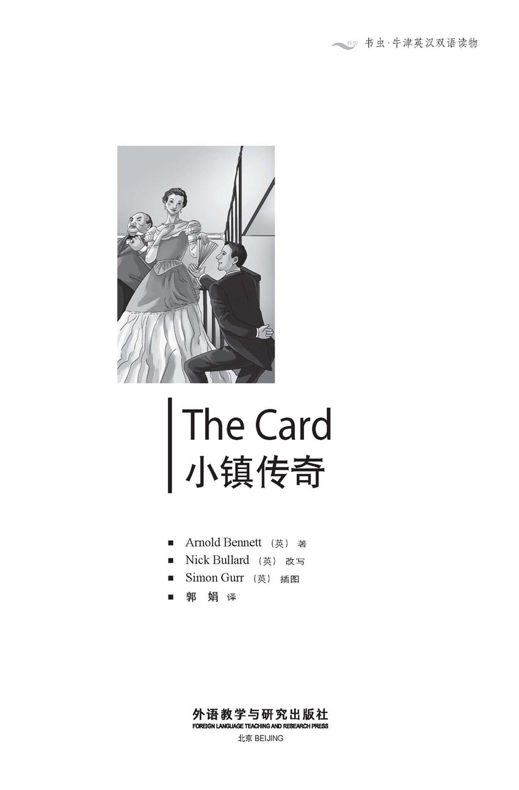
版权页
京权图字：01-2013-7836
Published by arrangement with Oxford University Press for sale in the People's Republic of China only and not for export therefrom. This edition is for sale in the mainland of China only, excluding Hong Kong SAR, Macao SAR and Taiwan.
© Oxford University Press 2008
Oxford is a registered trademark of Oxford University Press
图书在版编目（CIP）数据
小镇传奇：英汉对照／（英）本涅特（Bennett, A.）著；（英）布拉德（Bullard, N.）改写；（英）格尔（Gurr, S.) 绘；郭娟译．—北京：外语教学与研究出版社，2014.2
（书虫·牛津英汉双语读物）
书名原文：The card
ISBN 978-7-5135-4069-8
Ⅰ．①小… Ⅱ．①本…②布…③格…④郭… Ⅲ．①英语－汉语－对照读物②中篇小说－英国－现代 Ⅳ．①H319.4：I
中国版本图书馆CIP数据核字（2014）第029038号
出版人 蔡剑峰
责任编辑 田 娜
封面设计 蔡 颖
出版发行 外语教学与研究出版社
社 址 北京市西三环北路19号（100089）
网 址 http://www.fltrp.com
版 次 2014年3月第1版
书 号 ISBN 978-7-5135-4069-8
凡侵权、盗版书籍线索，请联系我社法律事务部
举报电话：（010）88817519 电子邮箱：banquan@fltrp.com
法律顾问：立方律师事务所 刘旭东律师
中咨律师事务所 殷 斌律师
内容简介
内容简介
要想在生活中取得成功，需要哪些条件？聪明、好看、善良、勤奋、诚实？或者仅仅只是运气好？
邓瑞·梅钦是个乐天派。当他遇到麻烦时，决不会认输言败，哭天抹泪。他会主动去寻找机会，一旦发现机会，便会牢牢把握。当然，幸运之神也很眷顾着他。幸运的是伯爵夫人打算办场舞会，可邓瑞是如何弄到请柬的呢？幸运的是科多林夫人跟邓瑞的老板起了争执，可邓瑞是如何成为科多林太太的收租人的呢？更幸运的是“亚尔马号”在兰迪德诺附近海域沉没——可邓瑞是如何从这件事上赚得1000英镑的？
邓瑞生活的小镇叫伯斯利。镇上的人们喜欢能让他们欢笑的年轻人。“他真是个传奇。”他们说。他们迫不及待地想知道他下一次的奇遇……
THE CARD
THE CARD
If you want to be successful in life, what do you need? Do you need to be clever, good-looking, kind, hard-working, honest? Or just lucky?
Denry Machin is a cheerful kind of fellow. When he meets a problem, he doesn't lie down and cry about it. He looks for a chance, and when he sees one, he takes it with both hands. He has a lot of luck too, of course. It's lucky that the Countess decides to give a ball, but how does Denry manage to get an invitation? It's lucky that Mrs Codleyn has an argument with Denry's employer, but how does Denry become Mrs Codleyn's rent collector? And it's very lucky indeed for Denry when the Hjalmar goes down in the sea off Llandudno – but how does Denry make a thousand pounds out of it?
The people of Bursley, the town where Denry lives, love a young man who makes them laugh. 'He's a real card,' they say. They can't wait to hear about his next adventure...
目录
1．The dance
1
THE DANCE
Edward Henry Machin first saw daylight on the 27th of May, 1867, in Brougham Street in Bursley, the oldest of the Five Towns. Brougham Street goes down a hill to the canal, and contains a number of potbanks or pottery factories as well as some small houses. The rent for one of these houses was not high – only about twenty-three pence a week.
Edward Henry's mother (his father was dead) lived by making and washing clothes for fine ladies. She did not often laugh, and if you tried to argue with her, you never got very far. She was a woman of few words, and saved time every day by calling her son Denry, instead of Edward Henry.
Denry did not work hard at school, and boys who were lazy and not very clever usually just found jobs in the potbanks. Luckily, at the age of twelve, he won a place at the best school in Bursley. It happened like this. On the second day of the examination, Denry arrived a little early. As he walked around the examination room, he came to the teacher's desk, where he saw a list of names with the marks for the first day of the examination. The highest possible mark was thirty, but next to his name he saw the number 7. The numbers were written in pencil, and the pencil was on the desk. He picked it up, looked around the empty room, and at the door, and then wrote a 2 in front of the 7. Of course, this was not honest, but how many truly honest schoolboys are there? Denry was no worse than most of them.
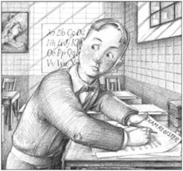
Denry looked around the empty room, and then wrote a 2 in front of the 7.
Denry did not do well at his new school, but he did not do badly either – and he was usually very pleased with himself. As he grew older, he continued to think well of himself. He knew that he was made for better things than a job in the potbanks, working with his hands.
* * *
When Denry was sixteen, his mother made a very fine dress for Mr Duncalf's sister. Mr Duncalf was the most important lawyer in Bursley. His sister was grateful to Mrs Machin, and so Denry got a job in Mr Duncalf's office. For several years Denry was happy. Then he met the Countess.
The Countess of Chell was a very grand lady. Her husband was one of the richest men in the Five Towns and was the new Mayor of Bursley. The mayor and his wife had decided to have a ball and to invite all the most important people in the town. There were thirty-five thousand people in Bursley, and at least two thousand of these thought that they were important. But only two hundred could dance in the Town Hall.
Three weeks and three days before the ball, Denry was sitting, alone, in Mr Duncalf's office when a tall and pretty young woman walked in. Before Denry could hide the newspaper he was reading, she said 'Good morning' in a very friendly way.
'Good morning, madam,' answered Denry.
'Is Mr Duncalf in?'
'No, madam. He's at the Town Hall.'
'Well, just tell him I called.'
'Of course, madam. Nothing I can do?'
She was already turning away, but she turned back and gave him a smile. 'Could you give him this list? The other lists are coming to him as well. The invitations must go out by Wednesday.'
She was gone. It was the first time Denry had seen the Countess, and she was even more beautiful than her photographs. And so easy to talk to! He started looking at her list of names, and he had a fantastic idea. He could go to the ball himself. The Countess had made a list of people to invite, but she had asked four or five other people for lists as well. She wanted Mr Duncalf to put the lists together and send the invitations. Of course the work was given to Denry, so it was easy to add E. H. Machin to the list. On Wednesday Denry received his invitation, and on Thursday he accepted it.
* * *
Denry had never been to a ball. He couldn't dance and he didn't have an evening suit. All the rich young men of Bursley bought their suits at Shillitoe's, so two days later Denry stepped into Shillitoe's shop. 'I want you to make me an evening suit,' he said to young Shillitoe.
Shillitoe knew Denry and he also knew that Denry did not have enough money to pay for a suit. He replied that he was too busy. 'so you're going to the ball, are you?' he asked, surprised.
'Yes,' said Denry, 'are you?'
Shillitoe shook his head. 'I've no time for balls.'
Denry looked around the shop, and at the door, and then said, 'I can get you an invitation if you like.'
Denry got his suit, and two years to pay for it.
One of the best dancing teachers in Bursley was Miss Ruth Earp. Denry learned to dance quickly, but he paid nothing for his lessons. Miss Earp also got an invitation to the ball.
Miss Earp was not beautiful, but she was young and a very good dancer, and at his last lesson Denry asked, 'Will you give me the first dance at the ball?'
Ruth Earp thought for a minute, and then said yes.
* * *
It took Denry two hours to get ready for the ball, and he arrived a little late. He walked up the beautiful double staircase into the ballroom and looked for Ruth. When he found her, he asked, 'What about that first dance?'
'It's nearly finished,' she answered, coldly.
'I'm awfully sorry. Can we finish it?'
'No!' she said, and walked away.
She was angry with him, and Denry did not know what to say. But she was only at the ball, he thought, because he had got her invitation for her!
He joined a group of young men who were watching the dancing. Harold Etches, who was one of the richest young men in the Five Towns, was there, with two or three of the Swetnam boys, and Shillitoe. At first Denry did not say anything. They all knew, of course, that he was Mr Duncalf's office worker and the son of a washer-woman, but all young men – rich or poor – look the same in evening suits.
The conversation in the group was about the Countess. All the important older men in the town were standing around her, but she was not dancing. Perhaps she didn't want to, but perhaps they were all afraid to ask.
'Why doesn't someone ask her to dance?' asked Denry suddenly.
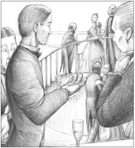
'Why doesn't someone ask her to dance?' asked Denry.
'Why don't you?' said Shillitoe. 'It's a free country.'
'Perhaps I will,' Denry said.
Harold Etches looked at Denry for a moment. 'You won't ask her,' he said. Then he smiled, not very pleasantly. 'I'll give you five pounds if you do.'
'All right,' said Denry, and quickly walked away.
'She can't eat me! She can't eat me!' he said to himself as he walked towards the Countess. The men were still around her and one of them, Denry saw, was Mr Duncalf. Denry was sorry about this because Mr Duncalf didn't know, of course, that Denry was coming to the ball.
Suddenly he found himself standing in front of the Countess, and immediately he forgot all the fine, polite words that Ruth Earp had taught him.
'Could I have this dance with you?' he said quickly, but smiling and showing his teeth. ('I've won that fiver, Mr Etches!' he said to himself.)
The Countess had to accept. She could see that everyone else was afraid to ask – and she did want to dance! So they danced together, and all the men of Bursley watched with open mouths. Denry managed to dance well most of the time, although once they nearly hit two other dancers. When the music stopped, the Countess looked at Denry and saw that he was really just a boy.
'You dance well!' she said, smiling almost like an aunt.
'Do I?' he smiled back. 'It's the first time I've ever danced, except in a lesson.'
'Really? You pick things up easily, I suppose.'
'Yes,' he said. 'Do you?'
Something in Denry's question amused the Countess very much. She put her head back and laughed, and everybody in the room could see that Denry had made the Countess laugh. She was still laughing, and so was he, when he thanked her for the dance.
As she turned away, Denry saw that she had dropped her fan. Quickly, he picked it up and put it in his pocket. Then he walked back to the group of young men.
'Here you are!' said Harold Etches, giving Denry a five-pound note.
Denry just smiled, and put the note in his pocket. He could see in the faces of the young men around him that he was suddenly famous. He was no longer just the son of a washer-woman; he was the man who had first danced with the Countess.
'Just the same as dancing with any other woman,' he said, when Shillitoe asked him what it was like.
'What was she laughing at?' someone asked.
'Ah!' said Denry. 'I can't tell you that.'
This was not the last time he was asked that question, but he always refused to answer. Many young ladies wanted to dance with him now, after his success with the Countess. Later, he saw Ruth Earp again and danced with her, and with her young friend, Nellie. But he said nothing at all about the Countess's fan in his pocket.
At the end of the ball, just as the Countess was leaving, Denry pushed through the crowd and held out her fan.
'I've just picked it up,' he said to the Countess.
'Oh! Thank you so much!' she said. Then she smiled. 'You do pick things up easily, don't you?'
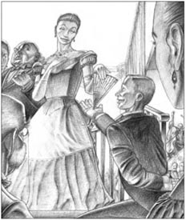
'You do pick things up easily, don't you?' said the Countess.
And both Denry and the Countess laughed and laughed, but nobody in Bursley knew why.
Denry walked home that night in a dream, thinking about the Countess, Ruth Earp and Nellie, and about the five-pound note in his pocket – more than he got for a month's work in Mr Duncalf's office.
He was a happy man. But trouble was waiting for him.
canal n. a kind of river, made by people, where boats can travel 运河
contain v. to have something inside, or have something as a part 容纳
pottery n. pots, dishes, plates etc made with clay and baked in a very hot fire 陶瓷
argue v. to disagree with someone in words, often in an angry way 争执，争吵
examination n. a test of what you know or can do 考试
lawyer n. someone whose job is helping people with the law 律师
grateful adj. feeling that you want to thank someone because of something kind that they have done 感谢的
Town Hall a building with offices for the Council and rooms for meetings, dances etc 镇公所，市政厅
fantastic adj. extremely good; attractive, enjoyable etc 极好的
evening suit formal clothes that people wear for formal meals, parties, and social events in the evening 晚礼服
staircase n. a set of stairs inside a building with its supports and the side parts that you hold on to （包括扶手、栏杆等的）楼梯
ballroom n. a very large room used for dancing on formal occasions（正式场合所用的）大舞厅，舞场
awfully adv. very 很
conversation n. an informal talk in which people exchange news, feelings, and thoughts 交谈，会话
manage v. to succeed in doing something difficult, especially after trying very hard 设法完成；努力完成
pick up to learn quickly; take up by hand 迅速学会；捡起，拾起
amuse v. make (somebody) laugh 使发笑
舞会
1
舞会
爱德华·亨利·梅钦第一次看见这个世界是在1867年5月27日，他出生于五镇中最古老的一个镇——伯斯利镇的布鲁厄姆街。布鲁厄姆街依山而下，一直延伸到运河。街上有几家陶瓷厂以及一些小房子。这些房子的租金不高——一周只需23便士左右。
爱德华·亨利的母亲（他的父亲已经去世）靠给时髦贵妇缝制和清洗衣服为生。她不怎么爱笑，即使是想和她争吵，也休想吵得起来。她是个沉默寡言的人，管儿子叫邓瑞，而不是爱德华·亨利，这样每天就节约点时间。
邓瑞在学校不好好念书。那些既懒惰又不算太聪明的男孩们一般会在陶瓷厂找份活儿干。幸运的是，邓瑞在12岁那年进了伯斯利当地最好的一所学校。事情是这样的：考试的第二天，邓瑞到得比较早，就在考场里四处溜达，然后就走到了讲台那儿。讲台上有一份名单，写着学生的名字和第一天的考试成绩。满分是30分，可他名字后的分数只有7分。分数是用铅笔写的，而铅笔就在讲台上。他拿起铅笔，扫了眼空荡荡的考场，又看了看门口，然后在7前面加了一个2。这样做当然不够诚实，但又有几个真正诚实的学生呢？邓瑞也不比他们中的大多数人坏到哪儿去。
到了新学校，邓瑞表现不佳，但也不算太坏——而且大多数时候他对自己相当满意。随着年龄的增长，邓瑞是依旧自我感觉良好。他相信自己生来便是为了干某种更好的事业，而不是在陶瓷厂，用双手干活谋食。
* * *
邓瑞16岁时，他母亲为邓卡夫先生的妹妹做了一条非常漂亮的裙子。邓卡夫先生是伯斯利声望最高的律师。他妹妹对梅钦太太十分感谢，于是邓瑞在邓卡夫先生的事务所谋到了一个职位。接下来好几年邓瑞过得都很开心。直到后来他遇见了伯爵夫人。
切尔伯爵夫人是一位名门贵妇。她丈夫不仅富甲五镇，而且还是伯斯利的新任镇长。镇长夫妇打算举办一场舞会，邀请镇上所有的头面人物参加。伯斯利有三万五千人，其中至少两千人都觉得自己是个人物，但只有两百人能获邀到镇公所跳舞。
离舞会还有三周零三天，邓瑞一个人坐在邓卡夫先生的事务所里。这时一位年轻漂亮、身材高挑的女士走了进来。邓瑞还没来得及藏起自己正在看的报纸，那位女士就很友好地跟他道了声“早上好”。
“早上好，夫人。”邓瑞应道。
“邓卡夫先生在吗？”
“不在，夫人。他在镇公所。”
“好吧，就跟他说我来过了。”
“好的，夫人。还有什么能为您效劳的吗？”
她已经转身要走了，但听他这么说又转过头来，冲他一笑，说：“你能把这份名单给他吗？其他的名单也会很快送来。请柬必须在周三前寄出去。”
她走了。这是邓瑞第一次见到伯爵夫人，她本人甚至比照片还要漂亮，而且这么平易近人！他开始看那份名单，脑子里蹦出一个绝妙的想法。他自己也能去参加舞会。伯爵夫人已定好了一份受邀人员名单，但她又要再加上另外四五个人的名单。她要邓卡夫先生把这些名单合并在一起，然后寄出请柬。当然这项工作交给了邓瑞，因此邓瑞毫不费力地就把E. H. 梅钦加在了名单上。周三邓瑞接到请柬，周四就回复说他接受了邀请。
* * *
邓瑞从未参加过舞会。他既不会跳舞，也没有晚礼服。伯斯利有钱的年轻人都在希利托家买礼服，因此两天后，邓瑞迈进了希利托的店铺。“我想要你为我做一套晚礼服。”他对年轻的希利托说。
希利托认识邓瑞，也知道他没有足够的钱来买晚礼服，便回答说自己太忙了。“这么说你是要去参加舞会了，是吗？”他惊讶地问。
“是的。”邓瑞说，“你去吗？”
希利托摇摇头。“我可没那闲工夫去参加什么舞会。”
邓瑞扫了一眼店铺，又看了看门口，接着说：“你要是想去，我能帮你搞到一张请柬。”
邓瑞得到了晚礼服，费用两年内付清。
露丝·厄普小姐是伯斯利最好的舞蹈老师之一。邓瑞学跳舞学得很快，但他一分钱学费也没花。厄普小姐也得到了一张舞会的请柬。
厄普小姐不算漂亮，可她人年轻，舞又跳得很好。最后一节课上邓瑞问她：“你能在舞会上陪我跳第一支舞吗？”
露丝·厄普想了一会儿，然后答应了。
* * *
邓瑞花了两个小时才为舞会打扮完毕，迟了一些到会场。他沿着华丽的双重楼梯走进大舞厅，寻找露丝。他一找到她，就问：“跟我跳第一支舞怎么样？”
“已经快结束了。”她冷冰冰地回答。
“我很抱歉。我们可以跳完这曲吗？”
“不行！”她说，然后走开了。
她在生邓瑞的气，邓瑞不知道说什么好。可是他心想，她能来到舞会，完全是因为自己给她弄到了请柬啊！
他和一群年轻人一起观舞。哈罗德·埃切斯—五镇最富有的年轻人之一—和两三个斯韦特纳姆家的男孩，以及希利托都在那儿。一开始，邓瑞什么话都没说。他们当然都知道他是邓卡夫先生事务所的职员，一个洗衣妇的儿子。可所有的年轻人——无论贫富——穿上晚礼服后都一个样子。
他们谈的是伯爵夫人。镇上但凡年长些的重要人物都站在伯爵夫人周围，但伯爵夫人却没有跳舞。也许她不想跳舞，又或许没一个人敢邀请她。
“为什么没人请她跳舞呢？”邓瑞突然问。
“你怎么不去？”希利托说，“这是个自由的国家。”
“或许我会的。”邓瑞说。
哈罗德·埃切斯盯着邓瑞看了一会儿。“你不会邀请她。”他说。然后他笑了，那种笑让人不太舒服。“你要是请了，我就给你五英镑。”
“好。”邓瑞说完便快步走开了。
“她不会吃了我！她不会吃了我！”邓瑞一边心中暗想，一边朝伯爵夫人走去。那群人仍然围着伯爵夫人，邓瑞看到邓卡夫先生也在那里。邓瑞有些不好意思，因为邓卡夫先生当然不知道邓瑞会来参加舞会。
突然邓瑞发现自己已站在伯爵夫人面前，露丝·厄普曾教给他的那些文雅礼貌的词儿，他登时全忘了。
“我能跟您跳这支舞吗？”他语速飞快，但没忘记咧嘴微笑。（“那五镑是我的了，埃切斯先生！”邓瑞暗自思量。）
伯爵夫人不得不接受。她看得出没人敢请她跳舞——可她又真的很想跳舞！于是他们就一起跳了一支，伯斯利所有的那些男人都张大嘴巴看着他们。邓瑞大部分时间都跳得不错，只有一次他们差点撞到另一对跳舞的人。音乐停下时，伯爵夫人看着邓瑞，发现他还只不过是个孩子呢。
“你跳得很好！”她说，笑得几乎像姑妈一样。
“真的？”他也笑了，“除了舞蹈课，这是我第一次跳舞。”
“是吗？那我猜你学东西一定很快。”
“是的。”他说，“您呢？”
邓瑞的问题不知哪里让伯爵夫人觉得很有趣。她仰着头哈哈大笑。舞厅里的每个人都看得出邓瑞逗乐了伯爵夫人。邓瑞感谢伯爵夫人能跟他跳舞时，二人一直笑着。
伯爵夫人转身离开时，邓瑞看见她的扇子掉在了地上。他连忙把它捡起来，放进自己口袋里。然后他回到那群年轻人当中。
“给你！”哈罗德·埃切斯说着递给邓瑞一张五英镑的钞票。
邓瑞只是笑了笑，把钱放进口袋。他从周围年轻人的脸上可以看出他现在突然出名了。他不再仅仅是个洗衣妇的儿子，他是第一个跟伯爵夫人跳舞的人。
“其实就跟和其他女人跳舞差不多。”当希利托问他和伯爵夫人跳舞是什么感觉时，他说。
“她在笑什么？”有人问。
“啊！”邓瑞说，“我不能告诉你。”
这不是邓瑞最后一次被问到这个问题，但他总是拒绝问答。在他成功邀请伯爵夫人跳舞之后，很多年轻女士都想和他跳舞。后来，他又看到露丝·厄普，便和她跳了一支，然后又跟她的年轻朋友内莉跳了一支。但他对自己口袋里装着伯爵夫人扇子的事却只字未提。
舞会结束时，伯爵夫人正要离场，邓瑞挤过人群，把扇子递给了她。
“我刚才捡到的。”他对伯爵夫人说。
“哦！太感谢你了！”她说，然后笑了笑，“你确实很擅长捡东西，对吧？”
邓瑞和伯爵夫人笑个不停，但伯斯利谁也不知道他们在笑什么。
那晚邓瑞走回家时仿佛在做梦，他想着伯爵夫人、露丝·厄普、内莉以及口袋里那五英镑——这比他在邓卡夫先生的事务所干一个月挣的还多。
他是个快活的人，但麻烦正在等着他。
2．The rent collector and the Widow Hullins
2
THE RENT COLLECTOR AND THE WIDOW HULLINS
The ball made a new man of Denry. He had danced with the Countess – the first man to dance with her. Bursley thought he was a wonderful fellow, and so did Denry himself. He had always been a hopeful, cheerful kind of person. Now he was filled with happiness all the time, and when he got out of bed in the morning, he felt like singing and dancing. Something good was going to happen, he knew; he just had to wait. He didn't have to wait very long.
A few days after the ball, Mrs Codleyn came to see Mr Duncalf. Mrs Codleyn was a widow, a woman of nearly sixty. She owned about seventy small houses in Bursley, and Mr Duncalf collected the rents for her. (Denry, of course, actually went to the houses to get the money.) Although the rent from all these houses was about twelve pounds a week, Mrs Codleyn always said that it was not enough. And the taxes! Every year the taxes on those houses got higher and higher, and Mrs Codleyn hated paying her taxes.
Mr Duncalf was an important man at the Town Hall. Because of this, Mrs Codleyn thought that he should make the taxes lower on her houses. Mrs Codleyn had chosen Mr Duncalf to collect her rents because she thought he was an honest man – but an honest man would never try to change the taxes specially for one person. What strange ideas people have sometimes!
Mrs Codleyn had just heard that her taxes were going up again, but she did not stay long in Mr Duncalf's office. The conversation (which Denry listened to through the wall) was short, loud, and not very polite. When Mrs Codleyn left, Mr Duncalf called Denry into his office.
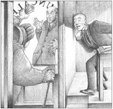
The conversation was short, loud, and not very polite.
'Write this letter to Mrs Codleyn,' he said angrily. 'Madam, I understand from our conversation this morning that you prefer to find another lawyer...'
Denry wrote down the letter. As he was leaving the room, Mr Duncalf spoke again.
'Machin!'
Denry knew what was coming. He had known it was coming ever since the ball.
'Who invited you to the ball?'
There it was. A very difficult question.
'I did, sir.' Denry just could not think of a lie.
'Why?'
'I thought perhaps you'd forgotten to, sir.'
'I suppose you think you're a really fine fellow after your dance with the Countess?' Mr Duncalf said unpleasantly.
'Yes,' said Denry. 'Do you?'
He had not meant to say it. The same little question had amused the Countess greatly, but it was true to say that it was not amusing his employer now. Mr Duncalf's own dance with the Countess had come to a very quick ending, because he had stepped heavily on her skirt.
'You will leave my office at the end of the week,' said Mr Duncalf, coldly.
'Oh, very well,' said Denry. And he said to himself: 'something good must happen now.' He had no idea what he would do next, but he was still cheerful. And he still had Harold Etches' five pounds.
The next morning both Mrs Codleyn and Denry were late for church. Mrs Codleyn was late by accident and also because she was fat. Denry was late because he had planned it that way. The two met at the church door.
'Well, you're nice people, I must say!' Mrs Codleyn said to Denry. She meant Duncalf and all his office workers.
'Nothing to do with me, you know!' said Denry.
'I wish I could find someone else to collect my rents.'
'I can still collect them for you, if you like,' said Denry.
'You?'
'I've told Duncalf I'm leaving him,' Denry said. 'The fact is, he and I don't agree on a lot of things.'
Mrs Codleyn looked at him and thought about it. He was just a young office worker, and his mother was a washer-woman. His suit was clean, but old and unfashionable.
'And what's more,' Denry went on, 'I'll do the work for less money. You pay Duncalf ninety pence a week – well, I'll do it for sixty pence a week. And I'll collect them better than him. Give me a month and you'll see the difference!'
At the end of the week a notice appeared on the front door of Denry's mother's house, which said:
E. H. MACHIN
Rent Collector
In a few weeks, Denry was doing very well. He was working for himself, and in two days he earned more money than in a week with Mr Duncalf. He walked around the town, smiling, looking important, talking to other young men, and thinking of new ways of making money.
* * *
One Monday morning he went to Mrs Hullins' house to collect the rent. It was a very small house, not much more than one room downstairs and one room upstairs. The rent was fifteen pence a week, and the Widow Hullins had not paid any rent at all for some weeks. She had lived there all her life, and after two husbands and eleven children, she now lived alone. She had seen a lot of life, and was old and tired.
'I've nothing for you,' she said when Denry came in.
'That's not good enough, I'm afraid,' said Denry cheerfully. 'I'm not leaving until I get ten pence.'
'It'll be a long wait. I'll have nothing until Saturday, when my son Jack starts a new job.'
'I'm sorry,' said Denry kindly, 'but if you don't pay, you'll have to go. Mrs Codleyn will put you out in the street, you know. Why don't you go and live with one of your children?'
After some more conversation, Denry left the house, still smiling cheerfully. And then, two minutes later, he put his head round the door again.
'Look here, mother,' he said, 'I'll lend you ten pence if you like. But you must pay me a penny a week for it. You must pay me back next week and give me eleven pence.'
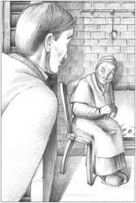
'I'll lend you ten pence if you like,' said Denry.
And he wrote down 'Ten pence, paid' in her rent book.
'Eh, you're a funny fellow, Mr Machin,' said Mrs Hullins.
The next Monday, all the neighbours knew that Denry could be very helpful about problems with the rent. And Denry, with his cheerful, smiling face, saved many families from a life in the street. Of course, it was good business for him, too. If someone borrowed ten pence for four weeks, when they paid Denry back, they had to give him fourteen pence. If it was for six months, they had to pay him back thirty-six pence. Money made like this just grows and grows.
Denry began to think that he was different from other men. He had invited himself to the ball, danced with the Countess, left his job with Duncalf, taken Duncalf's rent-collecting, and then introduced the idea of collecting rents and lending money at the same time. He was becoming well-known in Bursley as an unusual and amusing fellow – in other words, a card.
But then the day came when Mrs Codleyn decided to sell some of her smaller houses. This was very bad news for Denry because these houses were the most important part of his business. Denry talked to her, and tried to show her that it was not a sensible idea, but it was no good. Finally, Denry said wildly that he would buy some of the houses himself.
'I'll buy the Widow Hullins' house,' he said. 'I'll give you forty-five pounds for it.' It was all the money he had.
Mrs Codleyn agreed. And selling this one house, for the moment, seemed to be enough for her.
* * *
Denry was now a property owner. And he had also joined the Sports Club – the club for the rich, the fashionable, and the successful men of Bursley. It was a great thing for the son of a washer-woman to join a club like this.
On Denry's second visit to the club, he saw that some of the most important men in Bursley were there. A group of them were arguing in a corner of the comfortable bar.
'Some of the poor people in this town live in the most terrible old houses,' said Charles Fearns, a lawyer. 'And the town just doesn't care about them. There's an old woman – Hullins is her name – who's lived in the same awful old house for fifty years. She pays fifteen pence a week rent for this place, and now she's going to be put out into the street because she can't pay.'
'Who's the hard-hearted owner?' someone asked.
'Mrs Codleyn,' said Fearns.
'Mrs Codleyn isn't the owner,' called Denry, who was sitting at the next table, smiling. 'I am.'
'Oh, I'm sorry,' said Fearns, 'I had no idea—'
'Not at all!' said Denry. 'But what can I do? She can't pay, or doesn't want to pay. Do I let her live in the house for no rent because she's seventy? Come on, tell me. What do I do?'
'Fearns would make her a present of the house!' a voice said laughing, and everybody else laughed too.
'Well, that's what I'll do,' said Denry. 'I'll give her the house. That's the kind of hard-hearted owner I am.'
The room was silent for a moment.
'I mean it!' said Denry, and picked up his glass. 'she can have the house! Good health to the Widow Hullins.'
And the next morning, everybody in Bursley was talking about it. 'I say, have you heard Machin's latest?'
He was now not just a card; he was the card.
tax n. money you pay to the Council, to pay for roads, hospitals etc 税
church n. the religious ceremonies in a church （教堂的）礼拜仪式
by accident in a way that is not planned or intended 偶然，意外地
unfashionable adj. not popular at the present time 过时的，不时髦的
difference n. something that makes one thing or person different from another thing or person 不同之处
earn v. to get money by working 挣（钱）
sensible adj. reasonable, practical and able to judge things well 明智的，通晓事理的
wildly adv. in an uncontrolled or unrestrained manner 失控地；极为激动地
property n. a building and the land around it 房地产
hard-hearted adj. not caring about other people's feelings 硬心肠的，没有同情心的
收租人和哈林斯寡妇
2
收租人和哈林斯寡妇
舞会之后，邓瑞像换了个人似的。他和伯爵夫人跳过舞——他是第一个和她跳舞的人。伯斯利人觉得他了不起，邓瑞自己也是这么想。他一直是个乐观快活的人。现在他时刻都充满了幸福感，早上一起床，他便想放声歌唱，翩翩起舞。有什么好事定要发生，他心里明白；他只要等着就是了。而且他不用等太久。
舞会结束几天后，科多林太太来找邓卡夫先生。科多林太太是个寡妇，年近六旬。她在伯斯利有大约70所小房子，邓卡夫先生帮她收租金。（当然，邓瑞才是真正上门收租的那个人。）尽管这些房子每周能给她带来大约12英镑的收入，科多林太太总是说这些收入不够多。还有那些税！房子要缴的税每年都在上涨，科多林太太痛恨缴税。
邓卡夫先生是镇公所里举足轻重的人物。因此，科多林太太认为他应该把她房子的税降一降。科多林太太选择邓卡夫先生作她的收租人，是因为她认为他是一个诚实的人——但一个诚实的人永远不会专门为某个人调整税收金额。人们的观念有时是多么奇怪啊！
科多林太太刚听说她的税又要涨了，但她在邓卡夫先生的办公室没呆多久。他们的对话（邓瑞隔着墙听到的）很简短，声音很大，并且言语不太客气。等科多林太太走了后，邓卡夫先生把邓瑞叫进了他的办公室。
“给科多林太太写封信。”他气呼呼地说，“夫人，据我们今早的谈话得悉您有意另觅一位律师……”
邓瑞照他口述写完了这封信。就在邓瑞准备离开房间时，邓卡夫先生又开口了：
“梅钦！”
邓瑞知道会发生什么。自舞会以来他就知道这一天总会到来的。
“谁邀请你去参加舞会的？”
果然如此。一个很难回答的问题。
“我自己，先生。”邓瑞想不出如何去扯个谎。
“为什么？”
“我想您大概忘了邀请我，先生。”
“我看你觉得自己跟伯爵夫人跳舞后就是个真正的上等人了，是吧？”邓卡夫先生不客气地说。
“是的。”邓瑞说，“您觉得呢？”
他本不想说这个。同样一个小小的问句能令伯爵夫人非常开心，但必须承认现在却不能逗乐他的老板。当时邓卡夫先生和伯爵夫人的舞很快就结束了，因为他重重地踩在了她裙子上。
“这周上完班你就不用来了。”邓卡夫先生冷冷地说。
“噢，好吧。”邓瑞说。他暗自思量：“一定有什么好事很快就会发生了。”他还不清楚接下来要做什么，但他依然满心快活。况且他还有哈罗德·埃切斯给他的五英镑。
第二天早上科多林太太和邓瑞做礼拜都迟到了。科多林太太迟到不光是出于偶然，还因为她胖。邓瑞迟到则是故意盘算好的。两人在教堂门口碰上了。
“嗯，你们可真是些体面人，我必须得这么说！”科多林太太对邓瑞说。她是指邓卡夫以及他事务所的所有员工。
“这跟我没有任何关系，你知道的！”邓瑞说。
“我希望能另找个人帮我收租。”
“要是你愿意的话，我仍然可以为你收租。”邓瑞说。
“你？”
“我已经跟邓卡夫说了，我不为他干活了。”邓瑞说，“事实上，我和他在很多事情上看法都不一致。”
科多林太太看着他，想了一会儿。他只是一个年纪轻轻的办事员，他母亲是个洗衣妇。他穿着干净的西装，但又旧又不时髦。
“还有，”邓瑞继续说，“我收费更低。你每周付给邓卡夫90便士——嗯，我一周只要60便士。我活儿也比他干得漂亮。给我一个月时间，你就知道区别了！”
周末，邓瑞母亲家的前门上挂出了一个告示，上面写着：
E. H. 梅钦
收租人
几周后，邓瑞就做得很不错了。他为自己打工，两天挣的钱比在邓卡夫先生那里一周挣的还多。他在镇上转悠，面带笑容，端着架子，与其他年轻人聊天，想着挣钱的新法子。
* * *
一个周一的早上，他去哈林斯太太家收租。那是一所很小的房子，就楼下一个房间、楼上一个房间。房租为一周15便士，哈林斯寡妇已经好几周没交房租了。她一辈子都住在那里，嫁过两任丈夫，生了11个孩子，而现在则独自生活。她饱经生活的风霜，如今已变得衰老而疲惫。
“我没钱给你。”邓瑞进来时她说道。
“这恐怕不行。”邓瑞欢快地说，“除非给我10便士，否则我不会走的。”
“那你得等很久。等到周六我儿子杰克开始新的工作后我才有钱。”
“我很抱歉，”邓瑞和善地说，“但您不交钱，就得搬走。科多林太太会把您赶到大街上去，这您是知道的。您为什么不搬去和您其中一个孩子住呢？”
二人又说了一会儿，然后邓瑞离开了这所房子，他依然快活地笑着。接着，两分钟后，他的脑袋又出现在了门口。
“听着，大娘，”他说，“要是您愿意，我可以借给您10便士。但您必须每周给我1便士的利息。您下周得把钱还给我，一共是11便士。”
接着他在她的租金簿上写下“10便士，付讫”。
“啊，你真是个有趣的小伙子，梅钦先生。”哈林斯寡妇说。
接下来的一个周一，所有邻居都知道了邓瑞十分乐意帮人解决租金问题。而一副快活笑脸的邓瑞使很多家庭免于露宿街头。当然，对于邓瑞来说这也是笔好生意。要是有人跟他借10便士四个星期后还，就得还给他14便士；要是借六个月，到时就得付给他36便士。邓瑞以这种方式挣的钱越来越多。
邓瑞开始觉得自己与众不同了。他曾邀请自己参加了舞会，和伯爵夫人跳了舞，炒了邓卡夫的鱿鱼，拿下了邓卡夫的收租业务，然后还发明了收租和放贷同时进行的做法。他在伯斯利渐渐出了名，大家把他看作一个非同寻常的有意思的家伙——换个说法，他便是一个传奇。
但是有一天，科多林太太打算卖掉一部分较小的房子。对邓瑞来说这是个大大的坏消息，因为这些房子是他的生意里最重要的一部分。邓瑞找她谈，试图说服她这样做不明智，可毫无用处。最后，邓瑞情绪激动地说他自己要买下其中的一些房子。
“我要买下哈林斯寡妇住的那所房子。”他说，“我出45英镑。”那是他的全部积蓄。
科多林太太同意了。眼下卖掉这一所房子对她来说似乎已经足够了。
* * *
邓瑞现在是个有房产的人了。他还加入了体育俱乐部——一个为伯斯利镇上富有、时髦、成功的男士开办的俱乐部。对一个洗衣妇的儿子来说，加入这样的一个俱乐部是件了不起的大事。
邓瑞第二次去俱乐部的时候，发现伯斯利的几位重要人物都在那里。那群人正呆在舒服的酒吧一角争论着什么。
“镇上有些穷人住在破陋不堪的老房子里。”一位名叫查尔斯·费恩斯的律师说，“政府根本不关心他们。有个老太太——名叫哈林斯——50年来一直住在一所破旧的老房子里。她要为这么一个住所每周花费15便士，现在她因为交不起房租要被赶到大街上。”
“那个铁石心肠的房主是谁啊？”有人问。
“科多林太太。”费恩斯说。
“科多林太太不是房主，”邓瑞大声说，他坐在隔壁桌上，面带笑容。“我才是。”
“哦，对不起，”费恩斯说，“我不知道——”
“不要紧！”邓瑞说，“可我能做什么呢？她交不起房租，或许是不想交。就因为她70岁了我就得让她免费住在那所房子里吗？好吧，告诉我，我该怎么做？”
“费恩斯会把那所房子作为礼物送给她！”一个人笑着说。其他人也都笑了。
“好吧，那正是我打算要做的。”邓瑞说，“我要把房子送给她。我就是那种铁石心肠的房主。”
房间里的人沉默了片刻。
“我是说真的！”邓瑞说，然后举起酒杯，“房子是她的了！祝哈林斯寡妇身体健康！”
第二天早晨，伯斯利镇上的每个人都在谈论这件事。“喂，你听没听说梅钦的最新消息？”
现在他不再是一个传奇，他就是那个传奇。
3．The dancing teacher and the furniture van
3
THE DANCING TEACHER AND THE FURNITURE VAN
One day in July Denry knocked at the door of a house at the top of Brougham Street. The dancing teacher, Miss Ruth Earp, lived there, in a house owned by Mr Calvert, and Denry now collected Mr Calvert's rents for him.
'Good morning, Miss Earp,' said Denry, when she opened the door. 'I've come about the rent.'
'The rent?' said Ruth, surprised. She gave him a look which seemed to say, 'Why does a little boy like you ask about my rent?'
'Yes. I collect rents for Mr Calvert now,' Denry said. He did not like the 'little boy' look on her face, and added, 'You haven't paid any rent for more than a year.'
Ruth Earp gave a hard little laugh. 'I see,' she said. 'so Mr Herbert Calvert is paying you to do his dirty work now. I must tell you, Mr Machin, that not long ago Mr Calvert was more interested in me than in my rent. But when I decided that I could not return his interest, he said things which hurt me very much – very much indeed.'
'Oh,' said Denry. He told himself that he was here on business.
'But if you can't pay your rent, Miss Earp, I'm afraid you'll have to leave.'
Ruth looked at him, and then gave a slow, sad smile. 'Of course I can pay it,' she said gently. 'I just wanted to punish Mr Calvert a little. I can't pay you just at this moment, I'm afraid. The bank is closed. Can you come back tomorrow? Come at four o'clock, and I'll give you a cup of tea.'
The next day Denry returned. It was the first time he had taken tea with a young lady, and so he had put on his best summer suit. He noticed that Ruth was wearing a very pretty dress – something white with bits of pink in it.
Ruth had introduced Denry to dancing, and now she introduced him to taking tea. It was all very beautifully done – tea in very small cups, little squares of bread-and-butter, and interesting conversation. Ruth seemed much more friendly today, and Denry found it all very pleasant.
Then suddenly Ruth stopped speaking, and lay back in her chair with her eyes closed.
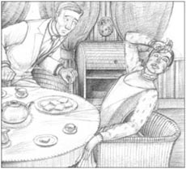
Suddenly Ruth lay back in her chair with her eyes closed.
'Is something the matter?' asked Denry.
'I'm afraid I've got an awful headache,' she answered.
'I'm sorry,' said Denry. 'Is there anything I can do? Perhaps you should lie down. Would you like me to go?'
'But I must pay you the rent first.' She put her hand to her head. 'The money's in that desk. Could you get it for me?'
She gave Denry a key. He went over to the desk, put the key in the lock, and tried to turn it. Nothing happened, and then the key turned and turned. 'I can't open it,' he said.
Ruth stood up, holding her head. She came over to the desk, and tried the key. 'Oh dear. I'm afraid you've broken the lock. I'll have to get someone to mend it tomorrow morning, and then I'll bring the money round to you.'
'Don't worry,' said Denry. 'I can easily call back for it tomorrow. And I'm very sorry about the lock.'
* * *
Late that night Denry came home from an evening at the Sports Club and just as he reached his mother's house, he saw something strange at the top end of Brougham Street. A large furniture van was moving down the street all on its own; there were no horses. Clearly, the owner had left it there and forgotten to put on the brakes. It was moving slowly now, but Denry could see that when it reached the bottom of Brougham Street, it could be very dangerous.
Denry was always at his finest at difficult or dangerous moments. As the van passed him, moving at about five or six kilometres an hour, he jumped on, losing his hat, and tried to put the brakes on. For a second or two the van seemed to slow down, but then Denry realized that the brakes were not working and the van was moving faster and faster down the hill. At the bottom of the street was the canal, and clearly nothing was going to stop the van now. It was too late to jump off, so Denry closed his eyes and held on hard.
When the van went in, Denry was under water for a moment, but then he managed to climb further up on the front of the van. Everything was still and dark, except for a little starlight on the water. Only Denry had seen the van's strange journey down the hill.
'Well, well!' he said aloud to himself.
And a voice answered from inside the van: 'Who's there?'
Denry's heart seemed to stop beating. 'It's me!' he said.
'Not Mr Machin?' said the voice.
'Yes,' said he. 'I jumped on as it came down the street – and here we are!'
'Oh!' cried the voice. 'I wish you could get round to me.'
It was Ruth Earp's voice. Denry understood immediately. Ruth had played with him! She had planned to take her furniture and run away in the night. She had no rent money locked in her desk at all. But he was not angry with her, just amused. Ruth was really very clever – in fact, very like Denry himself.
He had to climb over the roof of the van to get to the back. The van was black inside, and the floor was under fifty centimetres of water.
'Where are you?'
'I'm here. I'm on a table. It's the only thing the men put in the van before they went to have their supper.'
Denry felt around until he touched her wet dress.
'You're a bad girl, you know,' he said.
Ruth started to cry. 'I know,' she said miserably. 'But I had no money. What could I do?'
Denry climbed on to the table next to her.
'What can we do now?' she whispered.
'Wait until it gets light,' said he.
So they waited. On a hot July night it is not unpleasant to sit in the dark with your feet in water. Ruth told Denry all about her life and her money problems.
When it started to get light, Denry saw that the back of the van was only a metre from the edge of the canal, so they jumped. In the grey early light they looked at one another. Ruth had a black eye, and Denry had lost his hat.
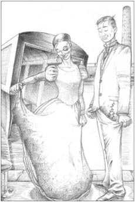
Ruth had a black eye, and Denry had lost his hat.
'Go home by the back streets, not up Brougham Street,' said Denry. 'I'll come and see you in the morning.'
It was four o'clock in the morning when Denry went quietly up his mother's stairs. He had seen nobody.
* * *
Only two people in Bursley ever knew exactly what had happened that night. Everybody knew that Denry had tried to save the town from a dangerous runaway van and had ended in the canal. But as well as this one fact, there were a great many stories about the accident, and in these stories the names of Denry and Ruth were always appearing.
One morning Denry went to see Mr Herbert Calvert and gave him ten pounds which he said came from Ruth Earp.
Calvert gave Denry a strange look. 'What's going on?' he asked. 'Is it true that she was trying to leave without paying?'
'I don't think so. It's all very extraordinary. I think the van was at the wrong house.'
'Are you engaged to her?' asked Calvert.
Denry waited for a moment. 'Yes,' he said. 'Are you?'
And Denry thought to himself that few engagements had begun as strangely as theirs.
top n. the part of the street that is the furthest away either from you or from the most important entrance to it （街道的）最远处；尽头
dirty adj. used to emphasize that you think someone or something is very bad 脏的，可恶的，可恨的
punish v. to make someone suffer because they have done something wrong 惩罚
headache n. a pain in your head 头痛
on its own independently, alone 独自地
brake n. something that you use to stop a moving car or cart 车闸
journey n. a trip from one place to another 旅行，行程
centimetre n. a unit for measuring length. There are 100 centimetres in one metre 厘米
miserably adv. in a miserable manner 痛苦地
whisper v. to speak or say something very quietly, using your breath rather than your voice 悄声说
edge n. the part of an object that is furthest from its centre 边缘
runaway adj. completely out of control 失控的
engaged adj. having agreed to marry someone 已订婚的
engagement n. an agreement to marry someone 婚约，订婚
舞蹈老师和家具拖车
3
舞蹈老师和家具拖车
七月的一天，邓瑞敲响了布鲁厄姆街尽头的一所房子的大门。舞蹈老师露丝·厄普小姐就住在那里，那是卡尔弗特先生的房子，现在邓瑞为卡尔弗特先生收房租。
“早上好，厄普小姐，”当她开门时，邓瑞说，“我是来收房租的。”
“房租？”露丝说，显得十分惊讶。她看了他一眼，那表情似乎在说：“怎么让你这样一个小毛孩来找我要房租？”
“是的。我现在为卡尔弗特先生收房租。”邓瑞说道。他不喜欢她看他时露出像看“小毛孩”的表情，于是又补充道：“你都一年多没交房租了。”
露丝·厄普勉强笑了一下。“我明白了。”她说，“这么说赫伯特·卡尔弗特现在雇你来给他干这份脏活了。我必须告诉你，梅钦先生，不久前卡尔弗特先生对我比对我的房租更感兴趣。但当我决定不能对他的兴趣作出回报时，他说了一些非常伤人的话——非常非常伤人。”
“哦。”邓瑞说。他提醒自己到这儿是来办公事的。
“可你要是交不出房租，厄普小姐，恐怕就得搬走了。”
露丝看着他，慢慢露出悲伤的笑容。“我当然交得起。”她温柔地说，“我只是想给卡尔弗特先生一点颜色看看。恐怕现在我不能给你现钱，银行关门了。你能明天来吗？你四点来，我请你喝杯茶。”
第二天邓瑞又来了。这是他第一次和年轻女士喝茶，因此他穿上了自己最好的一身夏装。他注意到露丝穿了一条漂亮的裙子——那是条白底粉点的裙子。
露丝曾教过邓瑞跳舞，现在又教他喝茶。一切都布置得很精美——茶装在小巧的茶杯里，抹了黄油的面包切成一小块一小块的，还有风趣的谈话。露丝今天看起来友善得多，邓瑞觉得这一切都让人舒服极了。
突然露丝不再说话，靠在椅子里，闭上了眼睛。
“你怎么啦？”邓瑞问。
“不好意思，我头疼得厉害。”她说。
“真糟糕。”邓瑞说，“我能帮上什么忙吗？也许你应该躺会儿。你希望我离开吗？”
“可我得先给你房租。”她手掩额头，“钱在桌子里，你能帮我拿过来吗？”
她给了邓瑞一把钥匙。他走到桌子那里，把钥匙插进锁里，试着打开。钥匙转了又转，但锁打不开。“我打不开。”他说。
露丝扶着头站了起来。她走到桌子那里，试着开锁。“哦，老天，你把锁弄坏了。明早我得找人把锁修好，然后我把钱给你送过去。”
“别着急。”邓瑞说，“我明天再来拿也可以。很抱歉弄坏了锁。”
* * *
那天深夜，邓瑞在体育俱乐部消磨了一个晚上准备回家，快走到他母亲家时，他在布鲁厄姆街尽头发现一件奇怪的事情。一辆运家具的拖车自己沿着街道向下滑行；车前没有套马。很明显，车主把车放在那里，忘记刹闸了。拖车现在移动得很慢，但邓瑞知道一旦车到达布鲁厄姆街的尽头，情况会非常危险。
在危难时刻，邓瑞总是特别善于应对。当拖车以每小时五六公里的速度经过邓瑞身边时，他跳上了车，帽子掉了也顾不上，一心只想试着把闸刹住。有那么一两秒钟，车子似乎慢了下来，但接着邓瑞意识到刹车失灵了，拖车正以越来越快的速度朝山下冲去。街的尽头就是运河，显然现在没有什么能阻止拖车前进了。现在跳车已经来不及了，邓瑞闭上眼睛，紧紧地抓住了车身。
当拖车掉进河里时，邓瑞沉入了水中，但一会儿他就向上爬到车子的前端。除了水面的一点星光，四周静谧，一片漆黑。只有邓瑞目睹了拖车冲下山坡的奇特过程。
“好啊，好啊！”他大声自言自语。
车里有个声音应道：“谁在那里？”
邓瑞的心似乎停止了跳动。“是我！”他说。
“是梅钦先生吗？”那个声音问。
“是我。”他说，“车子顺着街道往下滑的时候，我跳了上来——于是我们就到这里来了！”
“哦！”那个声音喊道，“我希望你能到我这边来。”
那是露丝·厄普的声音。邓瑞立刻就明白了。露丝一直在耍他！她打算带着家具，趁着夜色逃走。她的桌子里根本没有锁着房租。但他不生她的气，只是觉得好笑。露丝真的非常聪明——事实上，她跟邓瑞很像。
他得从车顶爬到后面去。车里很黑，车底板已淹入水下50厘米了。
“你在哪儿？”
“我在这儿，在一张桌子上。那些人只把这一件家具搬进车里，然后就去吃晚饭了。”
邓瑞四处摸索，直到摸到了她的湿裙子。
“你是个坏女孩，你知道吗？”他说。
露丝哭了起来。“我知道，”她痛苦地说，“可我没钱，我能怎么办？”
邓瑞爬上桌子，呆在她身边。
“我们现在该怎么办？”她低声问。
“等到天亮。”他回答说。
于是他们就等着。在一个炎热的七月的晚上，坐在黑暗中，把脚泡在水里，倒也不是一件难受的事。露丝给邓瑞讲述了自己的生活经历，并告诉他自己手头比较拮据。
天色逐渐放亮，邓瑞发现拖车后部离河岸只有一米远，于是他们跳上岸。在凌晨灰蒙蒙的天色中，他俩看着对方。露丝一个眼眶淤青，邓瑞丢了自己的帽子。
“走小路回家，不要从布鲁厄姆街上走。”邓瑞说，“我上午会来看你。”
邓瑞悄悄走上家里的楼梯时，是凌晨四点。他在路上一个人都没遇见。
* * *
伯斯利只有两个人知道那晚到底发生了什么。所有人都知道邓瑞拼尽全力，使小镇免受一辆失控拖车的毁坏，而他自己最终掉进了运河。但就是关乎这一件事，也有好多种传闻，在这些传闻中，邓瑞和露丝的名字一再出现。
一天早上，邓瑞去见赫伯特·卡尔弗特先生，并给了他十英镑，说那是露丝·厄普的房租。
卡尔弗特奇怪地看了邓瑞一眼。“到底怎么回事？”他问，“她想不交房租就逃跑，这是真的吗？”
“我想不是。那件事太不寻常了。我觉得是拖车停错了地方。”
“你跟她订婚了吗？”卡尔弗特问。
邓瑞等了一会儿。“是的，”他说，“你呢？”
邓瑞心想，很少有人像他们这样，订婚订得这么奇怪的。
4．Saved by a storm
4
SAVED BY A STORM
When newly engaged people like Denry and Ruth want to go away on a summer holiday, there are many things to think about. A businessman, for example, who lives by collecting rents every week cannot go away easily for two. And a young woman who lives alone must always be careful about what other people think, so Ruth asked her friend Nellie Cotterill to go with her.
Ruth and Nellie took a room together at 26 St Asaph's Road, Llandudno. Denry took a room at number 28 St Asaph's Road. Who could want more?
Denry had never seen the sea before. As he walked along the beach in his best clothes, with the girls on either side of him, he thought it was all wonderful. He also saw fantastic possibilities for making money, because here were fifty thousand people, all on holiday, all wanting to do interesting things, and all with money to spend.
Denry thought about this a lot because he felt he was now a serious person. He had something to live for. He was very pleased and happy to be engaged to Ruth, although still a little surprised. What could this fine young lady see in him?
They had not discussed money at all, although Denry wanted to. It was clear that Ruth thought he was a rich man, and Denry was spending a lot of money. In fact, he could not move without paying for something. The pier, swimming, ice cream, chairs, fruit, boat trips, photographs, teas, coffees – even a short walk with Ruth was expensive.
Ruth had very little money, but it didn't worry her. She didn't know what money was, and she spent Denry's like water. The gentle, silent Nellie often asked to pay for something herself, but of course Denry couldn't let her. He liked Nellie Cotterill. She thought that he and Ruth were wonderful, and although she was a very quiet person, she was also very sensible.
At the end of the first week Denry was getting more and more worried about money. On the Monday morning he went back to Bursley to collect rents, and returned to Llandudno on Tuesday evening with his pockets full of rent money. Something had to happen, he thought. He didn't know what it was, but three months of engagement with Ruth Earp was going to leave him penniless.
* * *
He was saved by a storm at sea. They woke up on Wednesday morning to find the rain and wind crashing against the windows. The three walked down into the town, where they learnt that the town's lifeboat had gone out to a ship further along the coast. A second lifeboat (an old one, now owned by a fisherman) had gone out to a Norwegian ship, the Hjalmar, which was in difficulties just off Llandudno itself. Everyone in the town was watching the lifeboat save the sailors while the ship went down. Denry and the girls went onto the pier, and Denry even got his feet wet helping one or two of the Norwegian sailors from the lifeboat onto the pier. After that, he talked for a time to Cregeen, the owner of the lifeboat.
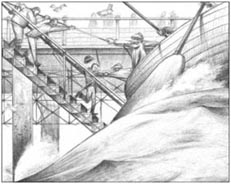
Denry got his feet wet helping the sailors from the lifeboat onto the pier.
It was a very exciting day, and it gave Denry an idea.
'I'll write a report about all this for the Signal,' he said. This was the Five Towns daily newspaper.
'Oh yes!' said Nellie. 'What a good idea!'
The next morning Denry was up early to send the report off by train. Then he and the girls walked into town – and spent more money. Everybody in the town was talking about the storm, the wreck of the Hjalmar and the wonderful rescue of all the Norwegian sailors by the lifeboat.
After a few minutes, Ruth turned to Denry.
'I had the bill for our room this morning,' she said.
'Oh!' he said. 'Did you pay it?'
'Yes. But now I've almost no money left. We spent so much money while you were away in Bursley. You don't know how quickly money goes!' She waited a moment, then said, 'I suppose we'll have to go home.'
'What a pity!' said Denry, sadly.
Of course, Ruth wanted Denry to say that he could pay for her to stay. But all he said was, 'What a pity!'
'I think I'll go home this afternoon.'
'I'm sorry,' said Denry.
At that moment a hand touched his arm. It was Cregeen.
'Mr Machin. It's now or never. It's twenty-five pounds if you can pay today.'
'Right!' said Denry. 'I'll see you this evening.'
Ruth pretended not to be interested in any of this.
* * *
Poor Nellie. She knew something was wrong, but she didn't know what it was. All she knew was that her holiday was coming to a sudden end. In the evening, the three of them walked to the station.
'Where's your luggage?' Ruth asked Denry.
'I'm not going. I've got business here.'
There was a bookshop in the station. Denry bought the Signal, which had just come in, and there was his report: 'Terrible Storm in North Wales – a report by Mr E. H. Machin of Bursley'. Denry was ready to explode with happiness, but he gave the newspaper calmly to Ruth.
She did not look at it. 'We'll read it on the train,' she said.
The bookshop also had a lot of souvenirs of Llandudno. Ruth wanted a glass plate with a picture of Great Orme Head on it, but the man in the shop said that they had sold out.
'Couldn't you get one and send it to me?' said Ruth.
'Oh yes,' said the man, taking out a book. 'What name?'
Ruth looked at Denry, in the way that a woman always looks at a man when she wants him to pay.
'Rothschild,' said Denry. 'The millionaire.'
These words ended their engagement. The next day Denry received by post a ring in a box, with a short letter.
'I only said "Rothschild"!' said Denry to himself. But secretly, he was pleased.
* * *
An hour later Denry met Cregeen, and was soon the owner of the old Llandudno lifeboat. He then went to find Simeon, an old sailor with a white beard. He had been in the lifeboat when they rescued the men on the Hjalmar.
'I've got the boat,' said Denry. 'I'll give you two pounds for the week.'
'All right,' said the old man. 'And I've seen three of those Norwegians. They don't speak English, but they understand about the money.'
'Good,' said Denry. 'I'll see you tomorrow morning.'
At five o'clock the next morning a boat left Llandudno. There were six men rowing, three of them Norwegians. There was also a man with a white beard, and Denry. In twenty minutes they were at the wreck of the Hjalmar and Denry was feeling very ill. Twenty minutes more and he was happy to be back on land.
At ten o'clock that morning two Norwegian sailors were walking around the town giving little notices to everyone they met.
THE WRECK OF THE HJALMAR
FAMOUS RESCUE AT LLANDUDNO
Every day at 11, 12, 2, 3, 4, 5 and 6 o'clock the famous lifeboat which rescued the Norwegian sailors will visit the wreck of the Hjalmar. The lifeboat's captain is Simeon Edwards, one of the rescuers, and the lifeboat is rowed by three of the rescued Norwegians.
Return trip, 12 pence
On the first day, Denry made twelve pounds. That evening he received a packet in the post. It was from Nellie. There was a box of chocolates and a note which said: Thank you very much for the holiday. I hope you will like these. Nellie. Denry was very pleased by this. Ruth's young friend, he thought, was much more grateful than Ruth herself.
The boat trips out to the wreck became more and more popular. In the afternoons, Denry had to ask 25 pence – it was the only way to stop the big crowds that were waiting on the beach. Soon, he was making a hundred pounds a week. He was sorry the wreck had happened in August and not July. He was sorry there were not two or even forty Hjalmars.
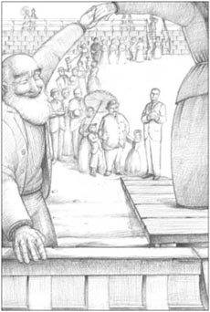
The boat trips out to the wreck became more and more popular.
One day in September when business was beginning to slow down (he was down to fifty pounds a week), Denry had a very pleasant surprise. He met Nellie on the beach, and it was a fact that seeing her gave him a great feeling of happiness. She was with her father, Councillor Cotterill, and her mother. The Councillor was a builder who had become rich building cheap houses for the people of the Five Towns.
'Well, young man!' said Councillor Cotterill.
He continued to call Denry 'young man' in a way that made Denry cross. 'I've made more money this summer than you have in a year,' he said silently to the Councillor's back.
'You must have dinner with me one evening,' Denry said finally. 'At the Majestic.' The Majestic was the finest, and most expensive, hotel in Llandudno. Some of the waiters were French!
They agreed to go the next day. Then Mrs Cotterill remembered that Ruth was coming to stay with them for a few days.
'Bring her along too!' said Denry.
The dinner was a great success. Denry had never arranged a dinner before, but it was easy. You just walked into the hotel in the morning and said what you wanted. The hotel arranged everything! And it was easy to meet a woman who had just broken off her engagement to you. You just said, 'Good afternoon, how are you?' and she said the same. Then you shook hands. And there you were, still alive.
After the meal, Denry walked back with the others to their hotel. Councillor Cotterill had stopped calling Denry 'young man'; he now called him 'my boy'.
'That lifeboat. It was just an idea, my boy, just an idea.'
'Yes,' said Denry, 'but I thought of it.'
'The question is,' said the Councillor, 'can you think of any more ideas as good?'
'Well,' said Denry, 'can you?'
When they reached the Cotterills' hotel, Ruth waited a moment while the others went in, and then turned to Denry:
'I don't feel like sleeping at all. I suppose you wouldn't like to go for a walk?'
'Well...'
'I suppose you're very tired.'
'No,' he replied. 'It's this moonlight I'm afraid of.'
A few days later the Cotterills and Ruth Earp went home, and Denry went with them. He had now sold the lifeboat and brought all his business in Llandudno to an end. He had very little luggage, but he did have a new hat-box. It was very heavy.
When Denry got home, he was pleased to see his mother again. She had often collected his rents for him during the summer, and had done it very well. He gave the hat-box to her, and she immediately dropped it.
'I don't want any of your games, young man,' she said crossly. 'What's in it?'
'Some pretty stones from the beach.'
She picked up the hat-box, opened it, and screamed. It fell to the floor with a crash and Mrs Machin was standing up to her ankles in money. She could see coins running all over the floor. At last they stopped moving, and then it was silent. Denry could hear his heart beating. For once in her life his mother could not find a word to say.
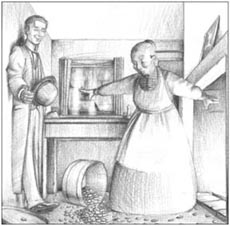
The hat-box fell to the floor with a crash.
For several days afterwards Mrs Machin was still picking up coins. The story of the money in the hat-box quickly went round the town. It was Denry's 'latest' and people talked about it for weeks afterwards.
discuss v. to talk about something with another person or a group in order to exchange ideas or decide something 谈论
pier n. a long platform built from the land into the sea, where people can walk or get on or off boats （伸向海中的）突堤码头
penniless adj. having no money 身无分文的
crash v. to hit something extremely hard, making a lot of noise 猛撞，猛击
lifeboat n. a boat that helps people who are in danger at sea 救生艇
wreck n. a ship that has been badly damaged in an accident（失事船舶等的）残骸
luggage n. the case, bags etc carried by someone who is travelling 行李
explode v. cause to burst with a violent release of energy 爆炸，爆发
souvenir n. something you keep to remember a place 纪念品
millionaire n. a person who has more than a million pounds, dollars etc 百万富翁
row v. to move a boat through water using oars (long pieces of wood with flat ends) 划船
packet n. a small container, usually made of paper, with several things of the same kind in it 小包，包裹
cross adj. angry or annoyed 生气的
feel like have an inclination for something or some activity 想要
ankle n. the joint between your foot and your leg 脚踝
go around become widely known and passed on （消息）流传
暴风雨救了他
4
暴风雨救了他
像邓瑞和露丝这种刚订婚的人出门度假消夏要考虑很多事情。比如说，一个靠每周收租为生的商人很难找出时间外出两周。而一个独居的年轻女士必须考虑别人的看法，因此露丝邀请了她的朋友内莉·科特里尔和她一同前往。
露丝和内莉住在位于兰迪德诺的圣阿萨夫路26号的一间屋里。邓瑞则住在圣阿萨夫路28号。还能有比这更好的安排吗？
邓瑞以前从没见过大海。当他穿着最体面的衣服漫步在海滩上，一边一个女孩相伴时，他觉得生活真是太美好了。他还发现了赚钱的大好时机，因为这里有五万人，这些人全都在度假，全都想做点好玩的事情，全都想把钱花掉。
关于此事，邓瑞考虑了很多，因为他认为自己现在是一个严肃的男人。他有了生活目标。跟露丝订婚他除了满足和幸福之外，还有那么点儿惊讶。这位高雅的年轻女士到底看上他什么了？
他们根本没讨论过钱的事，尽管邓瑞很想讨论。很明显露丝认定他是个有钱人，而邓瑞也在大把大把地花钱。事实上，他每走一步都要花钱。到码头啦、游泳啦、买冰激凌啦、租椅子啦、买水果啦、乘船旅行啦、照相啦、喝茶和咖啡啦——和露丝即便走上短短一段路都是十分昂贵的。
露丝没什么钱，但她毫不担心。她对钱没概念，花邓瑞的钱跟流水似的。温柔沉默的内莉常常主动要付些钱，但邓瑞当然不肯。他喜欢内莉·科特里尔。她觉得露丝和邓瑞都是好人，尽管她话不多，但非常明理。
第一周就要过去，邓瑞越来越担心钱不够用。周一早晨，他回伯斯利收租，周二晚上又来到兰迪德诺，口袋里装满了收来的租金。必须做点什么，他想。他还不知道要做什么，但跟露丝订婚三个月后，他已经快要身无分文了。
* * *
海上的一场风暴救了他。周三早上醒来时，他们发现狂风暴雨正狠狠抽打着窗户。他们三人走进镇里，得知镇上的那艘救生艇驶向了一艘停靠在海岸稍远处的大船。第二艘救生艇（旧的那个，现在归一个渔民所有）驶到了一艘挪威船“亚尔马号”那里，那艘船刚离开兰迪德诺就陷入了麻烦。镇上所有人都在看着救生艇营救那艘正在沉没的船上的水手。邓瑞和姑娘们赶到了码头上，邓瑞在帮一两个挪威水手从救生艇登上码头时，连自己的脚也打湿了。之后，他和救生艇的主人克里金聊了一会儿。
这是令人激动的一天，邓瑞有了个点子。
“我要给《信报》写篇报道，说说今天的事情。”他说。《信报》是五镇的日报。
“是啊！”内莉说，“多好的想法啊！”
第二天一早邓瑞早早起床，让火车把报道寄出。接着他和姑娘们走进镇里——又花了些钱。镇上所有的人都在谈论这场暴风雨、“亚尔马号”的残骸以及所有挪威水手被救生艇成功解救上岸的事。
过了几分钟，露丝转向邓瑞。
“今早他们送来了我们房间的账单。”她说。
“哦！”他说，“你付账了吗？”
“付了。但我手头快没钱了。你在伯斯利的时候，我们花销太大了。你不知道钱用得多快！”她停顿了一会儿，接着说，“我想我们得回家了。”
“真遗憾！”邓瑞神情哀伤地说。
露丝当然希望邓瑞说他会出钱让她留下来。可邓瑞说出口的只是“真遗憾！”
“我想今天下午就回家。”
“很遗憾。”邓瑞说。
就在那时一只手碰了碰他的胳膊。是克里金。
“梅钦先生。过了这个村就没这个店了。你今天要是能交钱，就收你25英镑。”
“好！”邓瑞说，“今晚我去找你。”
露丝假装对这一切都不感兴趣。
* * *
可怜的内莉。她知道有什么事不对劲，但她不知道到底怎么回事。她只知道她的假期突然要结束了。傍晚，他们三人朝火车站走去。
“你的行李呢？”露丝问邓瑞。
“我不走。我在这里还有公事。”
火车站有个书店。邓瑞买了份刚刚出版的《信报》，上面登载了他的报道：“北威尔士的可怕风暴——伯斯利镇E. H. 梅钦先生报道”。邓瑞内心兴奋得不能自已，但他还是平静地把报纸递给了露丝。
她看也没看一眼。“我们会在火车上看的。”她说。
书店里还有许多兰迪德诺的纪念品。露丝想买一个印有大奥姆角图片的玻璃盘子，但店里的人说已经卖完了。
“你就不能设法弄到一个，给我寄来吗？”露丝问。
“哦，可以。”店员说着拿出一个本子，“您的名字？”
露丝看着邓瑞，通常一个女人想让男人为她埋单时，就会用那种眼神。
“罗思柴尔德，”邓瑞说，“那个百万富翁。”
这些话终止了他们的婚约。第二天邓瑞收到邮局寄来的一个盒子，里面是枚戒指和一封短信。
“我仅仅说了句‘罗思柴尔德 '而已！”邓瑞心中暗想。但他暗地里很开心。
* * *
一小时后，邓瑞见到了克里金，并很快成为了那艘兰迪德诺老救生艇的新主人。接着他动身去找西米恩——一位白胡子的老水手，当人们营救“亚尔马号”上的人时，他就在救生艇上。
“我买下这船了。”邓瑞说，“我每周给你两英镑。”
“好的。”老水手说，“我已见过三个挪威水手。他们不会说英语，但说到钱他们就明白了。”
“好。”邓瑞说，“明早我来见你。”
第二天早上五点钟，一条船离开了兰迪德诺。一共有六个人划船，其中三个是挪威人，还有一位白胡子老人以及邓瑞。20分钟后他们到达“亚尔马号”残骸旁边，邓瑞晕船晕得厉害。又过了20分钟后他很高兴回到了陆地上。
那天上午十点钟，两个挪威水手走上街头，在镇上逢人便散发小传单。
“亚尔马号”残骸
著名的兰迪德诺大营救
每天11点、12点、下午2点、3点、4点、5点和6点，曾营救挪威水手的著名救生艇将前往“亚尔马号”残骸处。营救人员之一的西米恩·爱德华任救生艇的船长，3位获救的挪威人任水手。
往返船票：12便士
第一天，邓瑞就挣了12英镑。那天晚上，他收到一个包裹，是内莉寄来的。包裹里有一盒巧克力，并附有一张纸条，上面写着：谢谢你安排了这次度假。希望你喜欢这礼物。内莉。邓瑞对此感到很高兴。他觉得露丝的小伙伴远比露丝本人更懂得感恩。
乘船参观失事船残骸的活动越来越受欢迎。每到下午，邓瑞就得收费25便士，只有这样才能减少在岸上候船的汹涌客流。很快，他每周就能挣到100英镑。令他感到遗憾的是，船是在八月而不是七月出的事，而且只有一艘“亚尔马号”出事，而不是两艘或者四十艘。
九月的一天，当生意开始逐渐冷清下来时（他每周的收入降到了50英镑），邓瑞遇上一件令他十分惊喜的事。他在海滩上遇到了内莉，毋容置疑，见到她令他非常开心。她和父亲科特里尔议员以及母亲在一起。议员是一个建筑商，曾经靠给五镇居民建便宜的房子发过财。
“嘿，年轻人！”科特里尔议员叫道。
他一直管邓瑞叫“年轻人”，那种讲话方式让邓瑞很恼火。“我这个夏天挣的钱比你一年挣的都多。”他对着议员的背影暗暗说道。
“请你们务必赏光跟我一起共进晚餐。”邓瑞最后说，“在马杰斯蒂克饭店。”马杰斯蒂克饭店是兰迪德诺最好最贵的一家饭店，甚至有些服务员是法国人！
他们说好第二天去。然后，科特里尔夫人想起露丝要过来和他们呆几天。
“叫她一起来吧！”邓瑞说。
晚宴非常成功。邓瑞以前从没安排过晚宴，不过那其实很容易。你只需早上走进饭店，告诉他们你想要什么，饭店便会安排好一切！同一个刚跟你解除婚约的女人见面也很容易，只需说句：“下午好。最近好吗？”她也会说同样的话，接下来你们便会握手，就这样，你还活得好好的！
饭后，邓瑞陪他们走回宾馆。科特里尔议员已经不再叫邓瑞“年轻人”，他现在叫他“我的孩子”。
“那个救生艇，那只是个点子，我的孩子，只是个点子而已。”
“是的。”邓瑞说，“可那是我想出来的。”
“问题是，”议员说，“你能想出更多和这一样好的点子吗？”
“呃，”邓瑞说，“你能吗？”
当他们走到科特里尔家下榻的宾馆时，露丝等了一会儿，待其他人都进去后，转过身对邓瑞说：
“我一点都不困。我想你或许不想去散步？”
“呃……”
“我猜你一定很累了。”
“不累，”他答道，“我害怕的是这月色。”
几天后，科特里尔一家和露丝·厄普要回家了，邓瑞与他们同行。此时，他已经卖了救生艇，了结了他在兰迪德诺的所有生意。他几乎没有行李，但他带了个新的帽盒。盒子沉甸甸的。
邓瑞到家后，很高兴又见到了母亲。整个夏天，她常常替他收租金，而且干得非常不错。他递给她帽盒，她随即就把它扔在一边。
“我可不喜欢你的什么鬼把戏，年轻人。”她生气地说，“里面装的什么？”
“是从沙滩上捡的一些漂亮的石头。”
她捡起盒子，打开，然后尖叫起来。盒子掉到了地上，发出一声巨响，梅钦太太的脚踝都没在了钱币里。她看到钱币在地上到处滚动。最后它们终于停了下来，一切都恢复了平静。邓瑞能听到自己心跳的声音。他母亲生平第一次不知道该说什么才好。
之后连着好几天，梅钦太太都在捡拾硬币。帽盒里装钱的事情很快就传遍整个小镇。这是邓瑞的“最新消息”，人们谈论了好几个星期。
5．The rescue of the Countess
5
THE RESCUE OF THE COUNTESS
Denry's rent-collecting business grew and grew. He had come back from the Llandudno adventure with a thousand pounds. Two years later he had two thousand pounds, and his bank manager spoke to him with great politeness. Denry now rented a small office, and employed an office-boy.
He also bought a mule and cart. He said he needed them for his work. He could, of course, collect rents on a bicycle, and a bicycle doesn't eat much, or run away. But Denry wanted a mule. It was a good advertisement for his business.
Denry was happy that people talked about the mule as his 'latest', and he was happy to be making money. But he wanted more than money. He was always looking for new ideas, exciting things to do – things which would make sure that he was always the greatest 'card' in the Five Towns.
One day, a new notice appeared on Denry's door:
FIVE TOWNS SAVINGS CLUB
Secretary and Manager – E. H. Machin
Many shops in the Five Towns had savings clubs. Every week customers paid a few pence into the club. At Christmas the customers could spend all the money they had paid in. Denry's idea was for a savings club for every shop in the Five Towns. It was a fantastic idea. A poor person could pay just a little money every week, and to make it easier, Denry could come to the house and collect the money. Denry's savings club was special in one very important way. After paying a pound to Denry, someone could spend two pounds in the shops immediately – although they must then, of course, continue to pay into the club every week.
Denry needed to make a profit, of course, and his profit would come from the shops. For every six pence spent in a shop, the shop had to pay him one penny. He started by going to Bostocks, the biggest clothes shop in the Five Towns. With Bostocks' name on the list it was easier to find other shops. In two weeks he had nearly a hundred.
Now he needed something to give the club a good start. For twenty-five pounds Denry could put an advertisement on the front page of the Signal, but he preferred free advertisements. Then he had an idea. He could ask the Countess of Chell to be the patron of his club. Hers was the best possible name to have at the top of his letter paper. She was the richest woman in the Five Towns. Some people loved her and some people hated her, but everybody knew her.
'I'll ask her. I'll have her as a patron,' he said to himself. 'I'll go to Sneyd Hall. She can't eat me.'
So one morning he arrived, without his mule, at the home of the Countess of Chell. He had been to Sneyd Hall before; the gardens were open to the people of the Five Towns, and there were often hundreds of people there on Sunday afternoons in summer. But today the gardens were empty.
It was a long walk between the trees up to the house, and a long walk up the steps. Denry rang, and the door opened.
'Well?' said a lady. She was dressed in black.
'Can I see the Countess?' he asked, giving her his card.
'I will ask,' she answered. She disappeared into the house, leaving Denry in the hall.
A few moments later he heard the Countess's voice:
'Oh, no! I'm terribly busy. I'm leaving in a few minutes.'
Still Denry waited. Nobody came to see him. Minutes passed and still nothing. Had they forgotten him? Then, through an open door in the back of the house he saw a man. It was Jock, the son of a friend of his mother. Jock worked at Sneyd Hall, where he drove the Countess's carriage.
Denry did not want to shout through the house, so he walked towards him. 'Jock!' he called, softly.
Jock didn't hear, and disappeared through another door. Denry followed, through door after door, until suddenly he found himself in a long ballroom, full of mirrors, paintings and rich furniture, with high windows to one side and big doors on the other. Jock had disappeared. Denry tried the big doors, but they were all locked. He went back to the door he had used to come into the room. But strangely, that was now locked as well. Then he heard horses outside, and running to a window, he saw the Countess's carriage driving away.
Denry tried knocking on all the doors, first politely, then noisily. He tried calling out, then shouting as loudly as he could. Nothing. At last he realized that there was nobody to hear him. He was a prisoner in an empty house.
He looked around the room. The only possible escape was to break a window, so Denry preferred to wait until night. He spent a long afternoon in the great ballroom of Sneyd Hall, looking at pictures and furniture. When night fell, he broke one of the big windows and went home. The Five Towns Savings Club began life without the Countess.
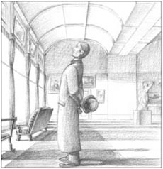
Denry spent that long afternoon in the ballroom of Sneyd Hall, looking at pictures and furniture.
The next morning, Denry opened the Signal and suddenly felt very ill.
ROBBERY AT SNEYD HALL
Yesterday, thieves broke into the great ballroom at Sneyd, home of the Countess of Chell. The police say that nothing seems to be missing. The Countess(who is away in Italy) will pay twenty pounds for any information about the thieves.
Denry was lucky. The robbery was the talk of the town for a few days, but nobody, it seemed, had remembered his visit to Sneyd Hall, or found his visiting card. And because nothing was stolen, the police were not very interested. Indeed, a week or two later, Denry saw a chance to make something out of his adventure. All that long afternoon he had been in the great ballroom, and he had used his eyes well. He remembered everything. Soon, a report appeared in the Signal under Denry's name. It began:
The recent robbery at Sneyd Hall gives us a reason to remember the beautiful paintings and furniture which it contains and which, happily, were not stolen. Only friends of the family, of course, ever see the great ballroom, but perhaps readers of the Signal will be interested to read a description of this fine room...
Everybody read the report of course, and everybody understood that Denry, who had already danced with the Countess, was now a good friend of the family.
* * *
The Savings Club was a great success; in fact, it became too successful. The reason was this. When customers had paid in two pounds, they were allowed to spend four pounds in the shops. They did spend four pounds in the shops. And Denry had to pay the shops. Customers were still paying in their five pence and their ten pence – but that wasn't enough to help Denry. His two thousand pounds in the bank was going very quickly. And then a whisper began to go round that Denry's famous Savings Club was not healthy, that it was going to fail, and that everyone would lose their money.
Denry knew that he had to do something – and do it very quickly. He thought of the Countess.
The Countess was very good at opening things. She opened hospitals and schools all over the Five Towns, and Denry read in the Signal that she was going to open a new Police Club in Hanbridge in a week's time. There are a number of facts about what happened on the day of the opening, and during the week before it. Some people may have ideas to explain some of these facts.
The facts are these. First: Denry called one day at the house of Mrs Kemp in Brougham Street. Mrs Kemp was the mother of Jock, Denry's old friend and carriage-driver to the Countess. Second: a day or two later, Jock came to visit his mother, and Denry also came to visit. Denry and Jock went for a short walk together. Third: on the afternoon of the opening of the Police Club, the Countess's carriage broke a wheel between Sneyd Hall and Hanbridge, about five kilometres from Hanbridge. Fourth: about five minutes later, Denry drove past in his mule cart, wearing his best clothes. Fifth: as Denry drove past, Jock called out, 'Excuse me, sir!' and Denry stopped. These are the facts.
'Good afternoon, Countess,' said Denry, lifting his hat.
'Oh, it's you, is it?' said the Countess. 'Good afternoon.'
'I see you've had an accident,' said Denry. 'Are you going somewhere important?'
'Yes, I am going somewhere important! I've got to be at the Police Club by three. And I shan't be. I'm late now.'
'I can get you there by three o'clock,' said Denry.
It was five kilometres to Hanbridge, and they were there in seventeen minutes. The mule was moving as fast as he could, but when they came into the main square, he stopped suddenly. There were several hundred policemen outside the Police Club, waiting for the Countess.
'Oh dear!' said Denry. 'He hates policemen.'
'I'll walk,' said the Countess.
'Oh no,' said Denry. 'It's all right.' He hit the mule over the head with his whip. The mule dashed off, but away from the Police Club. They hit another cart, full of vegetables, and turned it over. They dashed down a hill, fast. Then the Countess noticed that Denry was not using his right arm.
'I think I broke it when we hit the cart,' he said. 'Don't worry. I'll go up this hill – that'll stop him.'
Denry managed to turn the mule into Birches Street, which went up a hill. The mule slowed down, then stopped.
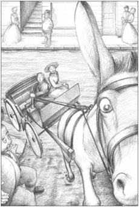
Denry managed to turn the mule into Birches Street.
'Shall I drive him to the Club?' asked the Countess. She could see that Denry's arm was very painful.
And so the Countess arrived at the Police Club in Denry's mule cart. And she invited Denry to the Club opening, where she told the five mayors and all the important people of the Five Towns how Denry had rescued her.
After the opening, Denry left the Club with the Countess, to help her find her carriage. But it still had not arrived.
'I can take you home in my cart,' offered Denry.
'I think I'll wait,' said the Countess.
'Well, let's go and have a cup of tea while we're waiting,' said Denry. 'There's a good tea-shop near here.'
The Countess loved tea, and they were soon sitting in a corner of the tea-shop. The Countess looked hard at Denry.
'How did you get all that information about the rooms at Sneyd Hall?' she asked.
After this, the conversation became exciting.
That evening a notice appeared in the Signal which said that the Countess was now Patron of the Five Towns Savings Club. In a few days a thousand more people had joined the Club. Denry had no more worries about money.
mule n. an animal whose parents were a horse and a donkey 骡子
cart n. a wooden 'car ', with two or four wheels, pulled by a horse （两轮或四轮的）马车
advertisement n. a notice (e.g. in a newspaper) which tells people about jobs, things to sell etc 广告，宣传
profit n. money that you get when you sell something for more than it cost to buy or make 利润
patron n. a famous person who uses their name or money to help people 赞助者
disappear v. to become impossible to see or find 消失，失踪
carriage n. a kind of 'car ', pulled by horses, used for carrying people 马车
escape n. a method of getting away from a place where you do not want to be, or from an unpleasant or dangerous situation 逃路，逃脱
description n. a piece of writing that says what someone or something is like 描写
whip n. a long thin thing used for hitting animals 鞭子
dash v. to run quickly; to hurry 猛冲
营救伯爵夫人
5
营救伯爵夫人
邓瑞的收租业务蒸蒸日上。他从兰迪德诺的那笔生意中赚到了1000英镑。两年后，他的资产已达到2000英镑。他的银行经理跟他说话时毕恭毕敬。邓瑞现在租了一间小办公室，雇了一名勤杂员。
他还买了一头骡子和一辆马车。他说这是出于工作需要。当然他也可以骑自行车去收租，自行车不吃东西，也不会跑掉。但邓瑞就是想要一头骡子。这对他的业务来说是一个好广告。
邓瑞很高兴现在人们把他的骡子当成他的“最新消息”来谈论，他也很高兴能赚到钱。但他想要的不只是金钱。他总在寻找新点子，总在找有意思的事情做——一些能保证他一直是五镇最伟大“传奇”的事情。
一天，一条新的告示贴在了邓瑞的门上：
五镇存款俱乐部
经理兼秘书——E.H.梅钦
五镇的很多店铺都有存款俱乐部。顾客每周向俱乐部交几个便士，圣诞节时他们便可以花掉他们在俱乐部的全部存款。邓瑞的想法是为五镇的所有店铺建立一个存款俱乐部。这是一个非常棒的想法。穷人只需每周交一点钱，而且为了简化手续，邓瑞可以上门收钱。邓瑞的存款俱乐部有个非常重要的与众不同之处：只要交给邓瑞的钱达到一英镑，便马上可在店里花掉两英镑——当然，人们必须每周继续往俱乐部交钱。
当然，邓瑞需要盈利，他的利润来自那些店铺。人们在店里每消费六便士，商店就得付给邓瑞一便士。他从五镇最大的服装店博斯托克斯店开始谈起。名单上一旦有了博斯托克斯店，再找其他店就容易多了。两周后他找到了将近一百家店铺。
现在他需要做点什么好让俱乐部有一个好的开端。邓瑞花25英镑就能在《信报》首页登个广告，但他更喜欢免费的广告。这时他想出个主意。他可以请切尔伯爵夫人做俱乐部的赞助人。她的名字应该是印在他信纸抬头上最好的名字了。她是五镇最富有的女人。有的人爱她，有的人恨她，但所有人都知道她。
“我要去问问她。我要请她做我的赞助人。”他心中暗想，“我要去斯尼德府。她不会吃了我的。”
于是一天早上，他来到切尔伯爵夫人的府第门口，没骑他的骡子。他以前曾去过斯尼德府，那里的花园对五镇居民开放。夏天的周日下午，那里常常聚集了数以百计的人。但今天花园都空无一人。
邓瑞在两旁遍植绿树的道路上走了长长一段，又上了长长的一段台阶才到门口。邓瑞按响门铃。门开了。
“什么事？”一个身穿黑衣的女士问。
“我能见伯爵夫人吗？”他问，顺手递给她名片。
“我去问问。”她说完便走进了房子，留下邓瑞一个人在大厅里。
过了片刻，他听到伯爵夫人的声音。
“哦，不行！我忙死了。我马上就得出门。”
邓瑞依然等着。没人来看他。几分钟过去了，还是没人来。他们把他忘了吗？随后，邓瑞从房子后面一扇开着的门望出去，看见了一个男人。那人叫乔克，是他母亲朋友的儿子。乔克在斯尼德府工作，替伯爵夫人赶车。
乔克不想隔着整间房子大声喊叫，因此他朝乔克走去。“乔克！”他轻声唤道。
乔克没听到，消失在另一扇门后。邓瑞跟着他，穿过一扇又一扇门，直到他突然发现自己置身于一个长长的大舞厅里，这里到处都是镜子、油画和贵重家具，房间一侧是高高的窗户，一侧是巨大的门。乔克不见了。邓瑞试着去敲那些大门，但所有的门都锁着。他回到他刚进来的那扇门，奇怪的是，那扇门现在也锁上了。接着他听到马嘶声，他跑到一扇窗前，看见伯爵夫人的马车驶走了。
邓瑞试着敲每一扇门，一开始是客气地敲，后来便大声地敲。他先是试着叫了几声，然后便放声大喊。没人应声。最终他意识到没有人会听到他的喊叫。他被囚禁在一所空房子里了。
他打量着房子四周，唯一可能的出路是打破一扇窗户，因此邓瑞选择等到晚上。他在斯尼德府巨大的舞厅里度过了一个长长的下午，欣赏那些油画和家具。夜晚来临，他打碎了一扇巨大的窗户，回到家里。五镇存款俱乐部没有等到伯爵夫人便开始了自己的业务。
第二天早上，邓瑞打开《信报》，突然觉得很不舒服。
斯尼德府抢劫案
昨日，窃贼闯进切尔伯爵夫人家斯尼德府的大舞厅。警方说未发现物品失窃。伯爵夫人（目前在意大利）将向提供窃贼信息的知情者支付20英镑酬劳。
邓瑞很幸运。这个抢劫案让镇上的人们谈论了几天，但好像没人记得邓瑞拜访过斯尼德府，也没人发现他的来访名片。由于没有物品失窃，警方也就不太关心。事实上，一两周之后，邓瑞发现可以利用一下这次冒险经历。那个漫长的午后，他一直呆在那个大舞厅里，他的眼睛也没闲着，记住了一切。很快，一篇署名邓瑞的文章出现在《信报》上。
最近发生在斯尼德府的抢劫案使我们有理由想起府里那些美丽的油画和家具。让人高兴的是，它们没有失窃。当然只有这个家庭的朋友曾见过这个大舞厅，但或许《信报》的读者想要了解一下这个精美的房间究竟是什么样子的……
大家自然都读到了这篇报道。人们都觉得，曾跟伯爵夫人跳过舞的邓瑞现在是这家人的好朋友。
* * *
存款俱乐部取得了极大成功；事实上，是太成功了。原因如下：顾客交了两英镑，就能在店里花四英镑。他们也的确毫不含糊地在店里花掉四英镑。而邓瑞就得付给那些店铺差额。顾客还在五便士、十便士地交着钱——但远不够邓瑞付给店铺的那些。邓瑞存在银行的2000英镑正在迅速地减少。不久，有传言说邓瑞著名的存款俱乐部运营不善，将要倒闭，到时所有人存在那里的钱都会打水漂。
邓瑞知道自己必须要做点什么——并且行动要迅速。他想到了伯爵夫人。
伯爵夫人非常擅长开设新机构。她开设的医院和学校遍布五镇。邓瑞从《信报》上得知她一周后要在汉布里奇开设一家新的警察俱乐部。俱乐部开张那天以及之前的一周发生了很多事情。有些人也许知道如何解释其中一部分情况。
那些情况是这样的：第一，一天邓瑞拜访了布鲁厄姆街的肯普太太。肯普太太是乔克的母亲。乔克是邓瑞的老朋友，也是伯爵夫人的车夫。第二，一两天后，乔克来看望他母亲，邓瑞也来了。邓瑞和乔克一起散了会儿步。第三，警察俱乐部开张的那天下午，伯爵夫人的车在从斯尼德府到汉布里奇的路上坏了一个轮子，此时离汉布里奇还有五公里。第四，大约五分钟后，邓瑞驾驶他的骡车，穿着最好的行头路过那里。第五，邓瑞路过时，乔克喊道：“打扰一下，先生！”邓瑞停了下来。情况就是这样。
“下午好，伯爵夫人。”邓瑞说，抬了抬自己的帽子。
“哦，是你啊！”伯爵夫人说，“下午好。”
“看来你们出了点小问题。”邓瑞说，“你们要去什么重要场合吗？”
“是的，我正去一个很重要的场合！ 我必须得在三点前到达警察俱乐部，但我赶不上了。现在已经晚了。”
“我能在三点前把你送到。”邓瑞说。
离汉布里奇还有五公里，17分钟后他们就到了。骡子以最快的速度前进着，但当他们进入主广场时，骡子突然停了下来。警察俱乐部外面聚集了几百个警察，他们正在恭候伯爵夫人的到来。
“哦，天哪！”邓瑞说，“它讨厌警察。”
“我走过去。”伯爵夫人说。
“哦，不。”邓瑞说，“没关系。”他用鞭子抽打骡子的头。骡子冲了出去，却偏离了警察俱乐部的方向。他们撞上了一辆装满蔬菜的马车，把对方撞翻了。然后，他们飞快冲下一座小山。随后伯爵夫人注意到邓瑞没有用自己的右臂。
“我想是撞上那辆车的时候把胳膊撞断的。”他说，“别担心。我准备把车朝这座山上赶——这会让它停下来。”
邓瑞设法使骡子走向伯奇斯街，这条街依山而上。骡子慢了下来，然后停住了。
“要不要我来把车赶到俱乐部去？”伯爵夫人问。她看得出邓瑞的胳膊很疼。
于是伯爵夫人坐着邓瑞的骡车到达了警察俱乐部。她邀请邓瑞参加了俱乐部的开幕式，并在开幕式上向五个镇长和五镇所有的头面人物讲述了邓瑞营救她的故事。
开幕式后，邓瑞和伯爵夫人一起离开了俱乐部，帮她找马车。但马车还没来。
“我可以驾我的车送你回家。”邓瑞主动提议到。
“我想我还是等等。”伯爵夫人说。
“好吧，我们一边喝茶一边等吧。”邓瑞说，“附近有个不错的茶馆。”
伯爵夫人很爱喝茶。没一会儿，他们就坐在了茶馆的一个角落里。伯爵夫人紧紧盯着邓瑞。
“你从哪里得知斯尼德府房间里的那些情况的？”她问。
这问题一问，后面的聊天变得精彩起来。
那天晚上《信报》上登出一条消息，称伯爵夫人现在是五镇存款俱乐部的赞助人。几天内，一千多人加入了俱乐部。邓瑞不用再担心钱的问题了。
6．The battle with Denry's mother
6
THE BATTLE WITH DENRY'S MOTHER
Late one winter's evening a few years later, Denry opened the door of his mother's house in Brougham Street.
'Is that you, Denry?' came a tired voice.
'Yes,' he said, walking into the living room.
His mother was sitting very near the fire, which was burning brightly. She looked cold and ill.
'You must see a doctor, mother.'
'A doctor! What for? I've just got a bit of a cold, that's all.'
'You've been ill a lot this winter,' said Denry. 'It's this awful old house we live in.'
'It's a very good house. It was good enough for your father and it's good enough for me.'
'Mother, I'm earning two thousand pounds a year! And here we are, living in an old house at a rent of twenty-three pence a week!'
Actually, Denry was making nearly four thousand a year, but he was afraid to tell his mother that. These days he was a great man in the Five Towns, but his greatness was nothing in Brougham Street.
'You can go and live in a fine, grand house if you like, Denry,' said his mother. 'But I'm staying here.'
And so the battle went on. Denry wanted to move, but his mother refused to leave Brougham Street. And Denry wouldn't move to a new house without her.
One morning a few weeks later, there was a letter for Mrs Machin from the man who owned her house. He had sold the house, he wrote, to a man in London, a Mr Wilbraham. From next month Mrs Machin must pay her rent to him.
The next day Denry came home with some news.
'I've met Mr Wilbraham, the man who bought our house. He came down from London. He wants me to collect the rents for him.'
'What did you tell him?'
'I said yes. Why not? It's easier for you. And he's an interesting man. He's building a new house up at Bleakridge. It's going to be a really modern house; a house where you can live comfortably without servants.'
'He's certainly a sensible man,' answered Mrs Machin. She hated servants and said so about once a week.
The house at Bleakridge started to grow. Mr Wilbraham stayed in London. The builder was Mr Cotterill (Denry had been friendly with the family since Llandudno), but Denry also kept an eye on things. The house was nearly finished when Mrs Machin got a second letter from Mr Wilbraham.
'He says we have to leave,' she cried. 'He wants us out immediately. Oh Denry, what shall we do!'
'We'll go and see him,' said Denry. 'He's coming to his new house tonight!'
So they put on their best clothes and went up to Bleakridge. Half an hour later they were standing outside Mr Wilbraham's house. Denry rang the bell, and they waited.
'Dirty doorstep,' said Mrs Machin, looking down at it. In Brougham Street it was important to have a clean doorstep, even if your rent was only twenty-three pence a week.
'Easy to clean,' said Denry. 'Watch!' He turned a tap next to the doorstep, and water ran over the step, washing it.
'Is that hot water?' asked Mrs Machin.
'Of course,' said Denry. He could see his mother liked the tap. 'Wilbraham's fixed a lot of things like that in his house.'
He rang again but there was no answer. 'Perhaps his train's late. I've got a key. We'll go in and wait for him.' He opened the door and turned on the electric light. Mrs Machin had never seen electric light before. She thought it was wonderful.
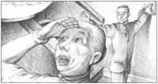
Mrs Machin had never seen electric light before.
'It's very warm in here,' she said.
'Central heating,' said Denry. 'No fires to light, no wood to carry, no fireplaces to clean—'
The doorbell rang.
'There he is!' said Denry, moving to the door.
Three people stood on the washed doorstep – Mr and Mrs Cotterill, and Nellie. Mr Wilbraham had invited them, said Mr Cotterill.
'Oh, come in, come in!' said Denry. 'He's not here. Perhaps he's missed his train. But the house is all ready for him. Come on, I'll show you round.'
He and Nellie ran upstairs and the others followed. Upstairs the house was as wonderful as downstairs. So easy to clean. No work at all. 'Why,' said Mrs Cotterill, 'I could live here without any servants and still have it clean and tidy by ten o'clock in the morning.'
Mrs Machin agreed.
Downstairs they found a fine cold supper ready to eat.
'Come on,' said Denry. 'Let's eat. I'm sure he'd like us to.'
Mrs Machin didn't want to. 'It's very strange that he isn't here,' she said.
'He's a strange man,' said Denry. 'I think he's a little mad.'
'I don't think he can be mad,' said Mrs Machin. 'The house is much too sensible for a madman.'
Finally, they all sat down to supper, and after some food and three bottles of wine they started to enjoy themselves. Soon Denry was searching the house for a fourth bottle of wine. He found one, opened it, drank some, and, with a cry, dropped the glass on the floor, where it broke.
It was not wine. It was a bottle of cleaning liquid. And the word POISON was written on it in large letters. Nellie didn't seem to realize how serious it was, and began to laugh.
Mrs Machin took Denry's arm. 'Come out to the kitchen,' she said. 'You must have some salt water, to make you sick.'
'Oh no!' said Denry. 'I'll be all right.'
But his mother wouldn't listen to him, and pulled him out of the room. Nellie had her hand over her mouth, trying very hard not to laugh, but not succeeding.
Ten minutes later they returned. Denry looked very white, and very cross. 'There's no danger now,' said Mrs Machin.
So the party came to an end. The Cotterills stood up to leave, and asked Denry how he was feeling.
'I feel much too ill to walk home,' he said. 'I'll sleep here. The bedrooms are all ready. My mother can stay too.'
The Cotterills left and Denry went to bed. After an hour his mother went to bed, too, but she slept very badly.
The next morning she was up before Denry and went out. Half an hour later she was back, waking Denry up.
'Oh, Denry! I've just been back home. They're pulling the house down. The roof's gone and the furniture...'
Denry sat up.
'I'll tell you something now,' he said. 'Wilbraham's dead.'
'Dead!'
'Dead. Well, he was never really alive, of course.'
And Mrs Machin understood. This was all Denry's plan to move her out of Brougham Street and up to Bleakridge. Soon all Bursley knew that Denry had won the battle with his mother. And they loved it.
But at least Mrs Machin had won with the salt water.
servant n. someone who works in another person's house 用人，仆人
doorstep n. a step just outside a door to a house or building 门外的台阶
tap n. a thing that you turn to let water come out of a pipe 水龙头
electric adj. an electric machine, light etc works using electricity 用电的
mad adj. with a sick mind 疯狂的
wine n. an alcoholic drink made from grapes 葡萄酒
liquid n. a substance that is not a solid or a gas, which flows, is wet, and has no fixed shape 液体
poison n. something that will kill you or make you very ill if you eat or drink it 毒药
邓瑞和母亲之间的斗争
6
邓瑞和母亲之间的斗争
几年后，一个冬天的深夜，邓瑞打开位于布鲁厄姆街的母亲家的房门。
“是你吗，邓瑞？”一个疲倦的声音问。
“是的。”他边说边走进客厅。
母亲坐在离炉火很近的地方，火烧得很旺。她看上去很冷，身体欠佳。
“你得去看病，妈妈。”
“看病！有什么可看的？我只是有点儿感冒，仅此而已。”
“这个冬天你总是生病，”邓瑞说，“都是因为住在这所又老又破的房子里。”
“这所房子很好。对你父亲来说够好，对我来说也够好。”
“妈妈，我每年挣2000英镑，可是看看我们，住在每周租金23便士的老房子里！”
事实上，邓瑞现在每年差不多挣4000英镑，但他不敢跟母亲说实话。这些日子他在五镇可是个大人物，但在布鲁厄姆街却啥也不是。
“邓瑞，你选择住到一栋豪华精美的大房子里去。”母亲说，“但我就呆在这儿。”
于是斗争持续着。邓瑞想搬家，但母亲拒绝离开布鲁厄姆街。邓瑞不可能一个人搬到新房子里去。
几周后的一个早晨，梅钦太太收到房东寄来的一封信。他在信里说他已把梅钦夫人住的房子卖给了一个叫威尔布里厄姆的伦敦人。从下个月起，梅钦太太得把房租交给威尔布里厄姆先生。
第二天邓瑞回家时，带回了一些消息。
“我见到威尔布里厄姆先生了，就是那个买下我们房子的人。他从伦敦过来了。他想让我帮他收房租。”
“那你怎么说？”
“我答应了。为什么不呢？这对你来说更容易。他是个有趣的人。他打算在布里克里奇街盖一座新房子。那将是一座真正现代化的房子；在那样的房子里，没有仆人也能住得很舒服。”
“他肯定是个明白人。”梅钦太太答道。她讨厌仆人，并且每周都要重复一次。
布里克里奇的新房子动工了。威尔布里厄姆先生呆在伦敦。建造商是科特里尔先生（从兰迪德诺回来之后，邓瑞和这家人一直保持友好关系），但邓瑞也会关注房子的建设。房子快建好的时候，梅钦太太收到威尔布里厄姆先生的第二封信。
“他说我们得搬家，”她喊道，“他要我们马上搬出去。哦，邓瑞，我们该怎么办啊？”
“我们去见他。”邓瑞说，“今晚他会去新房子那里！”
于是他们穿上最好的衣服前往布里克里奇。半小时后他们站在威尔布里厄姆先生的新房外面。邓瑞按响了门铃，他们等待着。
“台阶真脏。”梅钦太太看了看地下说道。在布鲁厄姆街，保持台阶干净是非常重要的，即使是房租每周只需23便士的房子。
“很好清洗。”邓瑞说，“看着！”他拧开台阶旁的一个水龙头，水流下来，冲洗着台阶。
“是热水吗？”梅钦太太问道。
“当然。”邓瑞说。他看得出母亲很喜欢那个水龙头。“威尔布里厄姆先生在房子里装了很多这样的玩意儿。”
他又按了按门铃，但没人应声。“也许他坐的火车晚点了。我有钥匙。我们进去等他。”他开了门，打开了电灯。梅钦太太之前从没见过电灯，她觉得电灯太奇妙了。
“这里非常暖和。”她说。
“是中央供暖系统。”邓瑞说，“无需生火，无需搬木柴，也无需清理炉子——”
门铃响了。
“他来了！”邓瑞说着，朝门口走去。
洗过的台阶上站着三个人——是科特里尔夫妇和内莉。科特里尔先生说是威尔布里厄姆先生邀请他们来的。
“啊，快请进，请进！”邓瑞说，“他不在。也许他错过了火车。但房子已经为他准备好了。来，我带你们四处看看。”
他和内莉跑上楼，其他人跟在后面。楼上和楼下一样妙不可言。房屋如此易于清理，根本没什么要干的。“哎呀！”科特里尔夫人说，“要是我住在这里，不需要仆人，就能在上午十点前把房子收拾干净。”
梅钦太太表示同意。
他们在楼下发现一顿精美的冷盘晚餐已经准备好了。
“来吧，”邓瑞说，“我们开吃吧。我肯定他会乐意我们这样做的。”
梅钦太太不想吃。“他不在这儿，这样有点儿奇怪。”她说。
“他是有点儿怪。”邓瑞说，“我觉得他有点儿不正常。”
“我可不觉得他不正常。”梅钦太太说，“这么好的房子不可能是个疯子的。”
最终，他们全都坐下来吃晚餐，在吃了一些东西，喝了三瓶酒后，他们舒服自在起来。很快，邓瑞开始在房子里找第四瓶酒。他找到一瓶，打开喝了几口，然后叫了一声，杯子掉在地上摔碎了。
那不是酒。是一瓶清洁剂。瓶身写着“有毒”两个大字。内莉似乎没意识到事情的严重性，还笑了起来。
梅钦太太拉着邓瑞的胳膊。“到厨房去。”她说，“你得喝点儿盐水，让自己呕吐。”
“哦不！”邓瑞说，“我没事。”
但邓瑞的母亲不肯听他的，把他拽出了房间。内莉用手掩嘴，强忍住笑，但没能忍住。
十分钟后，他们回来了。邓瑞看起来面色苍白，十分气恼。“现在没事了。”梅钦太太说。
聚会就这样结束了。科特里尔一家起身告别，并询问邓瑞感觉怎么样了。
“我太难受了，不能走回家。”他说，“我就睡在这里。卧室什么都有。我母亲也可以住在这里。”
科特里尔一家走后，邓瑞上床睡觉去了。一小时后他母亲也去睡了，但她睡得很不好。
第二天早上，她比邓瑞早起，然后便走出房门。半小时后，她回来把邓瑞叫醒了。
“噢，邓瑞！我刚才回家去了。他们把房子拆了。房顶不见了，还有那些家具……”
邓瑞坐了起来。
“现在我要跟你说件事。”他说，“威尔布里厄姆先生死了。”
“死了！”
“死了。呃，当然，他从来就没真的活过。”
梅钦太太明白了。这一切都是邓瑞设的计，就为了让她从布鲁厄姆街搬到布里克里奇。很快，全伯斯利镇的人都知道邓瑞在和母亲之间的斗争中取得了胜利。他们都喜欢这个故事。
但至少梅钦太太在让邓瑞喝盐水这场斗争中赢了。
7．The mayor, the wife, and the football club
7
THE MAYOR, THE WIFE, AND THE FOOTBALL CLUB
Soon after the move to Bleakridge, Bursley made Denry a Town Councillor. He was the youngest Councillor in the town, and one of the richest men in the Five Towns, but Councillor Cotterill still called him 'young man'.
Denry did not like Councillor Cotterill, but he was very friendly with Nellie and her mother. So when he bought one of the first cars in the Five Towns, he decided to invite them to go for a drive. When he got there, Nellie came to the door.
'Come in,' she said. 'I've got a surprise for you.'
In the sitting room, next to Mrs Cotterill, Denry saw a wonderful woman, beautifully dressed in black. When she turned to look at him, Denry suddenly recognized her. It was Ruth. Then he remembered that Ruth had married a rich man, a Mr Capron-smith, who had recently died.
'Well, Denry,' she said, softly.
'Well, Ruth.'
Conversation was not difficult. Ruth was talking about a holiday in Switzerland. Denry listened with interest.
After a few minutes, the front door opened, and Mr Cotterill was heard in the hall. He did not come into the sitting room, so Mrs Cotterill went out to speak to him. When she came back, she was crying.
'It's the bank!' she cried. 'After all these years, and now, suddenly... all his money...'
Nellie and Ruth ran to her, and Denry decided it was probably better to leave. But as he walked into the hall, he met Councillor Cotterill. He was looking very worried.
'Ah, Denry,' he said. 'You're a friend of the family. We've no secrets from you. I'm afraid things are looking bad. The fact is, the bank wants its money and I can't pay. '
'What are you going to do?' asked Denry.
'We'll all go to Canada. My brother lives there – he's in the building business. He'll give me a job. It's stupid really. I only need two thousand pounds, for a month or two, until I sell the houses I'm building. I say,' he continued, 'you don't have a thousand or two, do you, young man? There'll be an excellent profit in two or three months. You and I have been friends for ten years.'
'And I suppose I've come to visit you once a fortnight,' answered Denry. 'Perhaps two hundred and fifty times in ten years. That's eight pounds a visit, Cotterill. That's more expensive than the most fashionable doctor in England!'
This conversation does not make Denry look very kind. But Councillor Cotterill had called him 'young man' too many times.
Several weeks later the Cotterills left Bursley and took the train to Liverpool, where they would take the ship to Canada. On the day they left the Five Towns, Denry happened to meet Ruth in the street.
'Did you know they have the cheapest tickets for the ship?' she said. 'It's terrible! And it's too late to change them now.'
'No, it isn't,' said Denry. 'I could go to Liverpool and arrange it. The ship doesn't leave until tomorrow.'
'Let's both go!' she said. 'And we'll pay half each for their new tickets.'
They had a very pleasant train journey. Ruth was warm and friendly to Denry, and as the train pulled into Liverpool, he had a very strange thought. 'I could still marry her! She's a fine woman, and now she's rich herself...'
They found the Cotterills, and paid for them to travel in a more comfortable part of the ship. Mr Cotterill said he would repay them, Mrs Cotterill cried, and Nellie said nothing at all. The ship's bell rang for the second time. Denry and Ruth said their goodbyes and started to leave.
Then Denry looked back and saw Nellie's sad little face. He felt as he had never felt before in his life. He wondered what was happening to his legs. He turned and ran back to Nellie.
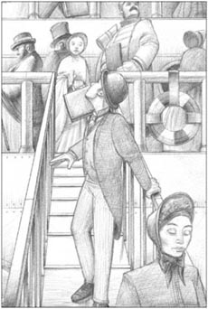
Denry looked back and saw Nellie's sad little face.
'Look here,' he whispered. 'Come with me for a moment. There's something I want to give you. I left it in the taxi.'
Ruth was already lost in the crowds of people leaving the ship.
'But there's not time. The bell—'
'It'll only take a minute. Quick.' Without waiting to argue, he took her hand, pulled her off the ship, and towards a taxi.
'Which taxi is yours?' asked Nellie.
'Any one. It doesn't matter. Jump in.' He pushed her in.
'I'll miss the boat.'
'I know you will. I don't want you to go to Canada.'
'What are you going to do with me?' whispered Nellie.
'Well, what do you think?' shouted Denry. 'I'm going to marry you, of course!'
* * *
One evening Councillor Denry Machin sat down to tea with his wife, Nellie, in the house in Bleakridge. He opened the newspaper and read aloud: Sudden Death of Councillor Bloor.
'Poor man!' said Nellie. 'And he was going to be mayor in November, wasn't he?'
'So he was,' said Denry.
'Who'll be mayor now?'
'Barlow, I suppose,' said Denry.
'Barlow! He's an awful man! Nobody likes Barlow. Why don't they make you mayor?'
'Would you like to be mayoress?'
'I don't know. Why not?'
'I probably will be mayor after Barlow. But I want to be the youngest mayor, which means I'll have to do it this year, while I'm still thirty-three.'
'Who decides?'
'The Council, of course. But you're right. Nobody likes Barlow. And he's having a lot of problems with the Football Club. He's the chairman, you know.'
Bursley Football Club was having a very bad year. In fact it had had several very bad years. It lost most of its games, and because not many people wanted to see Bursley lose, few people went to watch the games.
A few days after Denry's conversation with Nellie there was a crowded meeting at the Town Hall to discuss the club's future. Barlow, the chairman, got up to speak.
'I've been chairman of this club for thirteen years. In that time I've put two thousand pounds of my own money into the club. I can't put in any more. But what have you, the people of Bursley, done for your club? You don't come and watch. If we lose a game you stay at home the next week. We lose fifty or sixty pounds every time we play, and we can't go on like this.'
Several other people stood up to speak. Most of them had nothing kind to say about Councillor Barlow. All of them said that the club needed new players.
'New players!' said Barlow. 'Where's the money for new players? Has anybody got a thousand pounds?'
Nobody offered money. But more speakers stood up to ask for new players. Finally a man at the back of the hall stood up and walked up to the front.
'It's Machin!' said somebody. 'Good old Machin!'
Denry turned and looked at the sea of faces.
'I don't know a lot about football,' he said, 'although I enjoy a good game. But I do want to say something about new players. Isn't it true that one of the best players in England comes from Bursley?'
'Yes!' shouted the crowd. 'Callear! He's the best player in England!'
'That's right. Callear. He left Bursley when he was nineteen to play for Liverpool. He scored a lot of goals there in three years. Then he went to York, didn't he? And York have some money problems now, I hear, and want to sell some of their players. Gentlemen, Callear must come back home to Bursley.'
The crowd in the hall were now very noisy and excited. Barlow jumped angrily to his feet.
'And how are we going to get Callear? Councillor Machin says he doesn't know much about football, and it's true! Aston Villa have already offered ￡700 for Callear. Blackburn have offered ￡750. Has anybody here got ￡800?'
'Have you finished?' asked Denry, who was still standing.
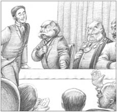
'Have you finished? ' asked Denry.
The hall exploded with laughter.
'Now,' called Denry, 'Mr Callear, will you please come up to the front of the hall?'
The hall was suddenly silent. A tall young man walked nervously down to the front of the hall.
'That's him!' said somebody. 'It's Callear. Good old Callear! Good old Machin!'
'Well?' asked Denry, turning to Barlow. 'Do you want him?'
'Yes. But what about the money?'
'That's my problem. I've just come back from York. If you want him, you can have him.'
Two days later a letter appeared in the Signal. It said that Denry should be the next mayor. Other letters followed, saying the same thing, and that Bursley needed a young and popular mayor. And when the Council met, it agreed.
That evening Denry told Nellie: 'You'll be the mayoress to the youngest mayor. And it's cost me, with hotels and travel, about eight hundred and eleven pounds!'
After the meeting a group of councillors were talking about Denry.
'What a card!' said one, laughing.
'There's never been a man like him in all the Five Towns!' said another.
'But he's never done a day's work in his life,' said Barlow. 'What's he done for the town?'
'What's he done? He's made us all laugh! That's what he's done.'
fortnight n. two weeks 两星期
mayoress n. the wife of a mayor 镇（市）长夫人
Council n. a group of people (councillors) who are chosen to work together to decide things for a town or city （英国地方政府的）政务委员会；地方议会
chairman n. a person who controls a meeting or directs the work of a committee or organization 主席，负责人
score v. to win a point in a sport, game, or competition 得分
镇长、妻子和足球俱乐部
7
镇长、妻子和足球俱乐部
就在他们搬去布里克里奇不久，邓瑞就被选为伯斯利镇的议员。他是伯斯利镇最年轻的议员，也是五镇最富有的人之一，但科特里尔议员仍管他叫“年轻人”。
邓瑞不喜欢科特里尔议员，但他对内莉和她母亲很友好。因此当他成为五镇第一批买车的人后，他决定带他们去兜兜风。当他到达时，内莉来门口接他。
“进来，”她说，“我要给你一个惊喜。”
客厅里，科特里尔夫人旁边坐着一位迷人的、穿着黑衣的美丽女人。当她转过头来看着邓瑞时，邓瑞突然认出了她，是露丝。接着他想起露丝嫁给了一个叫凯普伦·史密斯先生的有钱人，那人最近刚去世。
“哦，邓瑞。”她轻声说。
“哦，露丝。”
两个人轻松地聊了起来。露丝讲着她在瑞士的一次度假，邓瑞饶有兴趣地听着。
几分钟后，前门开了，大厅里响起科特里尔先生的声音。他没进客厅，于是科特里尔夫人出去跟他说话。她是哭着回来的。
“是银行！”她哭道，“过了这么多年，现在突然……他所有的钱……”
内莉和露丝跑到她身边，邓瑞觉得自己还是告辞的好。可就在他走进大厅时，正好碰上科特里尔先生，他看上去忧心忡忡。
“哦，邓瑞，”他说，“你是我们家的朋友。我们没有什么隐瞒你的。事情看起来恐怕不妙。事实上，银行要我还钱，而我却拿不出。”
“那你打算怎么办？”邓瑞问。
“我们都得去加拿大。我哥哥住在那儿——他也是搞建筑业的。他会给我一份工作。真是太蠢了。我只需要2000英镑，一两个月后，等我把正在建的房子卖了，就能还上。我说，”他接着问，“你能不能借我一两千英镑，年轻人？两三个月后我会给你优厚的利息。你我已是十年的朋友了。”
“我觉得我两周才拜访你们一次，”邓瑞说，“十年大约是250次。那意味着一次拜访的费用是八英镑，科特里尔。这比英国最受富人欢迎的医生还贵！”
在这次谈话中，邓瑞的态度不是很友善。可科特里尔先生叫他“年轻人”叫得太多次了。
几周后，科特里尔一家离开伯斯利，乘火车前往利物浦，他们将从那里坐船去加拿大。他们离开五镇的当天，邓瑞碰巧在街上遇到了露丝。
“你知不知道他们买的是最便宜的船票？”她说，“太糟了！现在改也来不及了。”
“不，还不晚。”邓瑞说，“我可以去利物浦帮他们改。船明天才出发。”
“我们一起去！”她说，“我们俩平摊他们新船票的费用。”
他们的火车旅行非常愉快。露丝对邓瑞热情友善，当火车驶入利物浦时，他有了个奇怪的想法。“我仍然可以娶她！她是个好女人，并且她现在自己也很有钱……”
他们找到了科特里尔一家人，并付钱让他们换到了更舒服的船舱里。科特里尔先生说他会还钱，科特里尔夫人则是一副哭哭啼啼的样子，而内莉什么都没说。船上的铃声响了第二遍。邓瑞和露丝跟他们告别，准备离开。
然后邓瑞回头看见了内莉那张忧伤的小脸。他有了种前所未有的感觉。他不知道自己的腿是怎么了。他转身，跑回内莉身边。
“听着，”他低声说，“跟我过来一会儿。我有东西要给你。我把它放在出租马车里了。”
露丝已经消失在下船的人群中。
“可是没有时间了。铃声——”
“只需一分钟。快点儿！”没等内莉争辩，他牵着她手，把她带下船，走向一辆出租马车。
“哪辆出租马车是你的？”内莉问。
“随便哪辆都行，这没关系。上车。”他把她推了进去。
“我要错过船了。”
“我知道。我不想你去加拿大。”
“你要拿我怎么办呢？”内莉小声问。
“嗯，你以为呢？”邓瑞大声说，“我当然是要娶你啦！”
* * *
一天晚上，邓瑞·梅钦议员坐在布里克里奇的房子里和妻子内莉喝茶。他打开报纸，大声读了出来：布卢尔议员暴亡。
“可怜的人！”内莉说，“十一月他就要当镇长了，不是吗？”
“是的。”邓瑞说。
“那现在谁来当镇长呢？”
“我猜会是巴洛。”邓瑞说。
“巴洛！他是个可恶的家伙！没人喜欢巴洛。他们为什么不选你当镇长？”
“你想当镇长夫人吗？”
“我不知道。为什么不呢？”
“我很可能会在巴洛之后当镇长。但我想成为最年轻的镇长，这就意味着必须今年，在我还只有33岁的时候当上镇长。”
“这事谁说了算呢？”
“当然是议会了。但你说得对，没人喜欢巴洛。他管理的足球俱乐部出了很多问题。你知道的，他是俱乐部主席。”
伯斯利足球俱乐部今年运气很差。事实上，运气差了好几年了。他们输掉了大多数的比赛。因为没有多少人愿意看伯斯利输球，于是几乎没人去看比赛了。
邓瑞和内莉谈话之后的某一天，一大群人聚集在镇公所，讨论足球俱乐部的前途。巴洛主席起身讲话。
“在这个俱乐部我已经当了13年的主席了。在此期间，我已经自掏腰包投入俱乐部2000英镑。我不能再继续投钱了。但是你们，伯斯利人，你们为自己的俱乐部做了什么？你们都不来看比赛。如果我们输了一场球，下周你们就会呆在家里。每场比赛我们都损失50到60英镑，不能再这么下去了。”
又有几个人站起来发言，他们大多数人对巴洛议员都没讲什么好话。所有人都说俱乐部需要新球员。
“新球员！”巴洛说，“哪有钱请新球员？你们当中谁有1000英镑吗？”
没有人肯出这笔钱。但不少人起身发言要求引进新球员。最后，一个人从大厅后面站了起来，走向前台。
“梅钦！”有个人说，“梅钦是好样的！”
邓瑞转过身，看着下面数不清的面孔。
“我对足球了解不多，”他说，“尽管我喜欢看精彩的比赛。但我想就新球员这件事说几句。英格兰最好的球员来自伯斯利，对不对？”
“对！”人们大声喊道，“卡利尔！他是英格兰最棒的球员！”
“对。是卡利尔。他19岁的时候离开伯斯利，为利物浦队效力。三年内他进了很多球。然后他去了约克队，对吧？听说约克队现在资金紧张，想卖掉几个球员。先生们，卡利尔必须回到故乡伯斯利来。”
大厅里的人群现在变得激动喧嚣起来。巴洛气恼地站了起来。
“可我们怎么才能买下卡利尔呢？梅钦议员说他对足球了解不多，他倒没撒谎！阿斯顿维拉已经出价700英镑买卡利尔。布莱克本出价750英镑。我们有人能出800英镑吗？”
“你讲完了吗？”一直站在旁边的邓瑞问。
大厅里爆发出一阵大笑。
“好了，”邓瑞大声说，“卡利尔先生，请您到大厅前面来好吗？”
大厅突然沉默下来。一个高个子年轻人紧张地走到大厅前面。
“就是他！”有人说，“是卡利尔。卡利尔是好样的！梅钦是好样的！”
“怎么样？”邓瑞转向巴洛问，“你想要他吗？”
“想。但去哪儿弄钱？”
“那是我的问题。我刚从约克回来。如果你想要他，就可以要。”
两天后，《信报》上刊登了一封来信。信上说邓瑞应该成为下一任镇长。随后又有更多的来信，表达了同样的观点，他们说伯斯利需要一个年轻的、受欢迎的镇长。议会开会时，大家一致通过了这个建议。
那天晚上，邓瑞告诉内莉：“你将成为最年轻镇长的夫人。算上住宿费和旅费，这花了我大约811英镑！”
会议结束后，一群议员聚在一起，谈论邓瑞。
“真是个传奇！”有人大笑着说。
“五镇中从没有人能像他一样！”另一个人说。
“可他一天活儿都没干过。”巴洛说，“他为这个镇子做了什么？”
“他做了什么？他让我们开怀大笑！这就是他做的事情。”
ACTIVITIES: Before Reading
The Card
ACTIVITIES
阅读练习
ACTIVITIES
Before Reading
1 Read the story introduction and the back cover. Which of these words do you think will describe Denry? Circle Y (Yes), N (No), or P (Perhaps) for each one.
| clever | Y/N/P |
| unlucky | Y/N/P |
| polite | Y/N/P |
| happy | Y/N/P |
| miserable | Y/N/P |
| funny | Y/N/P |
| quiet | Y/N/P |
| good-looking | Y/N/P |
| honest | Y/N/P |
| brave | Y/N/P |
| hard-working | Y/N/P |
| kind | Y/N/P |
2 How does Denry do it? Can you guess? Choose one answer for each question.
1) How does he get an invitation to the ball?
a) He buys one.
b) He puts his own name on the list.
c) He writes one to himself.
2) How does he become Mrs Codleyn's rent collector?
a) He does it at night, working under a different name.
b) He marries Mrs Codleyn.
c) He offers to do the job more cheaply than anyone else.
3) How does he make a thousand pounds from the Hjalmar?
a) He sells tickets for a trip to see the ship.
b) He buys the ship and sells it again.
c) He puts the ship onto land and makes it into a hotel.
ACTIVITIES: While Reading
ACTIVITIES
While Reading
1 Read Chapter 1. Choose the best question-word for these questions, and then answer them.
What / Why
1) ...did Mrs Machin call her son Denry?
2) ...did Denry do to his mark in the examination?
3) ...did Mr Duncalf give Denry a job?
4) ...did Denry need to do before he went to the ball?
5) ...did Denry decide to ask the Countess to dance?
6) ...question did Denry refuse to answer?
7) ...did Denry do as the Countess was leaving?
2 Before you read Chapter 2, can you guess who will make trouble for Denry?
1) the Countess
2) Mr Duncalf
3) Ruth
4) Harold Etches
3 Read Chapter 2. Are these sentences true (T) or false (F)?
1) Mrs Codleyn never paid the taxes on her houses.
2) Denry lied to Mr Duncalf about his invitation to the ball.
3) Denry was not worried when he lost his job.
4) Denry began lending money to help people pay their rent.
5) Widow Hullins couldn't pay her rent so Denry made her a present of the house.
4 Before you read Chapter 3 (The dancing teacher and the furniture van), how do you think the chapter gets its name?
1) Ruth buys a furniture van and joins Denry in business.
2) Denry offers to move Ruth's furniture, but has an accident with the van.
3) Ruth can't pay her rent and tries to run away, but the van carrying her furniture falls into the canal.
5 Read Chapter 4, then match these halves of sentences.
1) Although Denry was happy to be engaged to Ruth,...
2) Nellie offered to pay for things at Llandudno,...
3) Then the engagement ended...
4) After Denry bought the old lifeboat...
5) When Denry met the Cotterills on the beach...
6) Finally, he sold the lifeboat...
7) he invited them to dinner at an expensive hotel.
8) he found it was very expensive.
9) and took a hat-box full of money home to his mother.
10) but Denry wouldn't let her.
11) he sold boat trips to the wreck and made a lot of money.
12) when Denry called himself 'Rothschild' at the bookshop.
6 Before you read Chapter 5 (The rescue of the Countess), can you guess what Denry rescues the Countess from?
1) a fire
2) an accident on the road
3) a thief
4) the canal
7 Read Chapter 5. Then answer these questions.
Who
1) ...did Denry want as patron of his Savings Club?
2) ...drove the Countess's carriage?
3) ...wrote a report about Sneyd Hall for the Signal?
4) ...was going to open the new Police Club?
5) ...were waiting outside the Police Club?
6) ...broke his arm when the mule hit another cart?
7) ...had a cup of tea in a tea-shop near the Town Hall?
8 Before you read Chapter 6 (The battle with Denry's mother), can you guess what the battle will be about?
1) money
2) Denry's job
3) a new house
4) Denry's wife
9 Read the first two pages of Chapter 7. How do you think the story will end? Choose some of these ideas.
1) Denry marries Ruth.
2) Denry marries Nellie.
3) Denry goes to Canada with the Cotterills.
4) Denry comes back from Canada with lots of money.
5) Denry becomes the youngest mayor Bursley has ever had.
6) Denry is asked to be mayor, but says no.
7) Denry makes a lot of money when the Football Club wins.
8) Denry buys a very good player for the Football Club.
9) Ruth uses her money to save the Football Club.
ACTIVITIES: After Reading
ACTIVITIES
After Reading
1 What did you think of the things Denry did? Were they good or bad? Put a mark in each box, from 1 (very bad) to 10 (very good). Explain why you have chosen each mark.
· changing his mark in the examination
□
· getting invitations to the ball for himself, Ruth, and young Shillitoe
□
· taking Harold Etches' five pounds after dancing with the Countess
□
· taking Mrs Codleyn's rent-collecting business
□
· lending money to make more money
□
· giving Widow Hullins her house
□
· rescuing Ruth and not telling anyone about her money problems
□
· not paying for Ruth to stay on in Llandudno
□
· saying his name was 'Rothschild'
□
· writing about Sneyd Hall for the Signal
□
· planning the Countess's 'accident' with Jock
□
· rescuing the Countess after the 'accident'
□
· lying to his mother about the new house
□
· not helping Councillor Cotterill with his money problems
□
· taking Nellie off the ship to Canada
□
· buying Callear for Bursley Football Club
□
2 What did Denry and the Countess say to each other in the tea-shop? Put their conversation in the right order, and write in the speakers' names. The Countess speaks first (number 4).
1) _____ 'I only broke one window! But that was later. First, I shouted and called, hoping somebody would come.'
2) _____ 'And why did you write that piece for the Signal?'
3) _____ 'Locked in! How did that happen?'
4) _____ 'How did you get all that information about the rooms at Sneyd Hall?'
5) _____ 'I spent the afternoon looking at everything. When it got dark, I broke a window and went home.'
6) _____ 'so then you started breaking windows...'
7) _____ 'I came to ask you a question, but I got locked in the Hall by mistake.'
8) _____ 'And now you want me to help you, I suppose. So what was this question you wanted to ask me...?'
9) _____ 'I thought I was very lucky to spend a day among all those lovely things. I thought people would like to know about them.'
10) _____ 'But nobody came. So what did you do?'
11) _____ 'Lucky Mr Machin, eh? And this afternoon, when you rescued me – that was lucky too?'
12) _____ 'I was following one of the servants, but I lost him. And when I tried to find my way out, all the doors were locked.'
13) _____ 'Yes, it was, wasn't it? And I was happy to help.'
3 There are 23 words (3 letters or longer) from the story in this word search. Find the words and draw lines through them. They go from left to right, and from top to bottom.
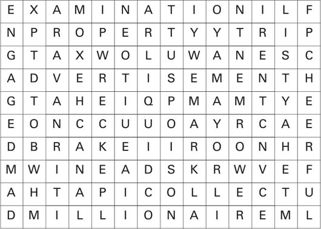
4 Look at the word search again and write down all the letters that don't have a line through them. Begin with the first line and go across each line to the end. You should have 25 letters, which will make a sentence of 8 words.
1) What are the words, and who said them?
2) Where was he, and who was he talking about?
3) What big change happened in his life after this?
5 Here are the people of Bursley talking about Denry. Say what the speakers are talking about, and then put the six pieces of news in the right order for the story.
1) 'Yes, it's true. It belongs to her now – and she didn't have to pay him a penny for it. Isn't that extraordinary? It was just a funny idea at first – but then he did it!'
2) 'It's the best thing that's happened to the Club for years. And Barlow's face! You had to laugh. Well, I think I know the name of our next mayor – and it doesn't start with B.'
3) 'Doesn't he write well! It's like being there and seeing it yourself – all those beautiful paintings... You can tell he goes there a lot. I'm sure he's a great friend of the family.'
4) 'No, nobody had any idea! Of course, he's known the family for years, but nobody guessed. And suddenly there they are, back from Liverpool, smiling all over their faces!'
5) 'Just like that! Well, she said yes – I couldn't believe it. And he said something that made her laugh and laugh – but nobody knows what it was. He just won't say.'
6) 'Yes, all over the floor – hundreds of them. She's still finding them in corners and under the furniture. And what did she say? Not a word! That's the biggest surprise!'
6 What did you think about this story and its characters? Complete some of these sentences.
1) I liked _____ best / least because ________.
2) The part of the story I enjoyed most / least was ________.
3) I would / wouldn't like Denry as my husband / friend / rent collector because ________.
4) I think Denry would make a good / bad mayor for Bursley because ________.
封底
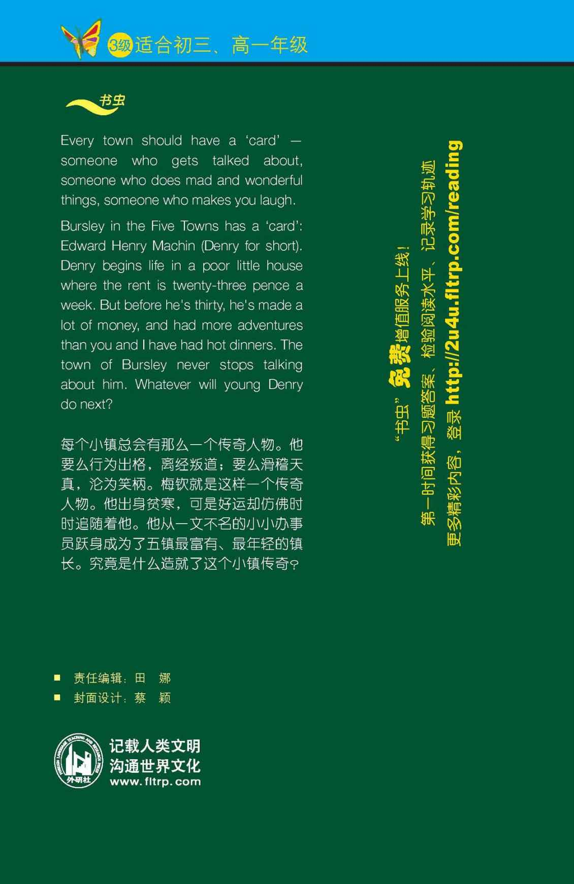